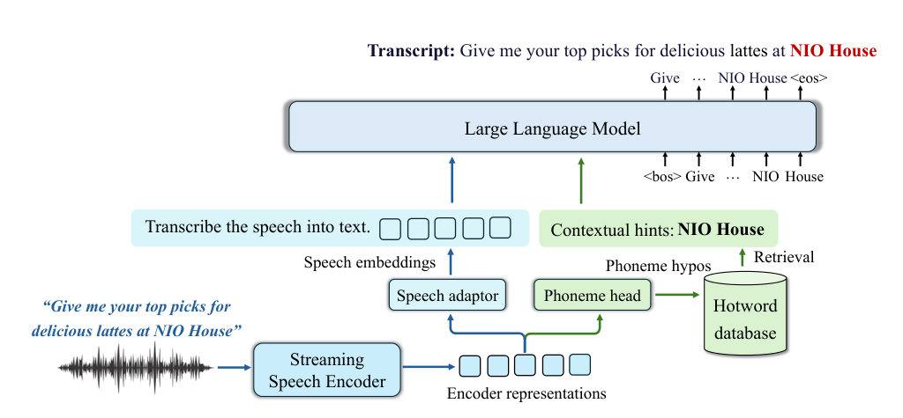
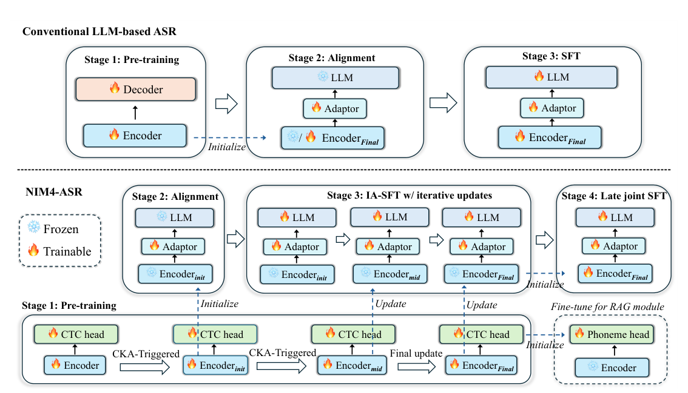

Yuan Xie∗, Jiaqi Song∗, Guang Qiu, Xianliang Wang, Kai Qiao, Junfeng Yuan Shengqing Liu, Yi Zhang, Bowen Chen, Ming Lei, Jie Gao, Jie Wu Advanced Intelligent Systems Group, NIO {ryan.xie2, jiaqi.song2}@nio.com Project page: https://yuanx9.github.io/NIM4-ASR/
摘要Abstract
Integrating large language models (LLMs) into automatic speech recognition (ASR) has become a mainstream paradigm in recent years. Although existing LLM-based ASR models demonstrate impressive performance on public benchmarks, their training remains predominantly data-driven, leaving key practical challenges insufficiently addressed—particularly limited downward scalability in resource-constrained deployments and hallucinations under acoustically challenging conditions. To address these issues, we present NIM4-ASR, a productionoriented LLM-based ASR framework optimized for both efficiency and robustness. Grounded in a principled delineation of functional roles between the encoder and the LLM, we redesign the multi-stage training paradigm to align each module with its intended capability boundary. Specifically, we reformulate the pre-training architecture and objective to mitigate the modality gap and improve parameter efficiency; introduce an iterative asynchronous SFT stage to preserve acoustic fidelity and constrain representation drift; and design an ASR-specialized reinforcement learning stage to further enhance recognition quality and robustness. We additionally incorporate a suite of production-oriented optimizations, including robustness under noisy and silent conditions, real-time streaming inference, and hotword customization via retrieval-augmented generation (RAG). Experiments show that NIM4-ASR achieves state-of-the-art performance on multiple public benchmarks with merely 2.3B parameters, while substantially outperforming larger-scale competitors on internal benchmarks—particularly in entity-intensive real-world scenarios. NIM4-ASR further supports million-scale hotword customization via RAG with sub-millisecond retrieval latency, enabling efficient adaptation to emerging entities and personalized user requirements.
将大语言模型（LLM）引入自动语音识别（ASR）已成为近年来的主流范式。尽管现有 LLM 语音模型在公开基准上表现出色，但其训练仍主要依赖数据驱动，若干关键工程挑战尚未被充分解决——尤其是资源受限部署下较小的向下扩展能力，以及在声学条件恶劣时出现的幻觉问题。针对这些问题，我们提出 NIM4-ASR：一个面向生产环境、同时优化效率与鲁棒性的 LLM 语音识别框架。我们在方法上为编码器与 LLM 划分清晰的功能边界，并据此重新设计多阶段训练范式，使每个模块与其应有的能力边界对齐。具体而言，我们重构了预训练架构与目标，以缩小模态鸿沟并提升参数效率；引入迭代异步 SFT 阶段来保持声学保真度并抑制表征漂移；并设计面向 ASR 的强化学习阶段，进一步提升识别质量与鲁棒性。我们还加入了一整套面向生产的优化，包括噪声与静音条件下的鲁棒性、实时流式推理，以及基于检索增强生成（RAG）的热词定制。实验表明，NIM4-ASR 仅用 2.3B 参数就在多个公开基准上达到 SOTA，并在内部基准上显著超过更大规模的竞争者——尤其是在实体密集的真实场景中。NIM4-ASR 还通过 RAG 支持百万级热词定制，检索延迟低于毫秒级，可以高效适配新出现的实体和个性化用户需求。
1 引言Introduction
With the rapid advancement of large language models (LLMs), the prevailing paradigm of automatic speech recognition (ASR) is undergoing a transition from classical architectures (Graves et al., 2006; Chorowski et al., 2015; Chan et al., 2016; Graves, 2012) to the encoder–adaptor–LLM framework (Bai et al., 2024a; An et al., 2025). Over the past two years, a series of LLM-based ASR models, including Seed-ASR (Bai et al., 2024a), Fun-ASR (An et al., 2025), FireRedASR series (Xu et al., 2025b, 2026), Voxtral (Liu et al., 2025), Index-ASR (Song et al., 2025), and Qwen3-ASR (Shi et al., 2026), have achieved promising performance on public ASR benchmarks.
随着大语言模型（LLM）的快速发展，自动语音识别（ASR）的主流范式正从经典架构（Graves et al., 2006; Chorowski et al., 2015; Chan et al., 2016; Graves, 2012）向「编码器–适配器–LLM」框架（Bai et al., 2024a; An et al., 2025）过渡。过去两年间，一系列基于 LLM 的语音模型——包括 Seed-ASR（Bai et al., 2024a）、Fun-ASR（An et al., 2025）、FireRedASR 系列（Xu et al., 2025b, 2026）、Voxtral（Liu et al., 2025）、Index-ASR（Song et al., 2025）以及 Qwen3-ASR（Shi et al., 2026）——在公开 ASR 基准上都取得了不错的成绩。
Compared with classical ASR models that are primarily optimized for acoustic-to-lexical transduction, LLM-based ASR benefits from the rich linguistic priors and contextual modeling capacity inherited from large-scale language model pretraining (Fathullah et al., 2024). The LLM’s strong language *Equal Contribution. modeling capacity and contextual coherence modeling help resolve acoustic and lexical ambiguities, yielding transcriptions that are more fluent and semantically coherent. Furthermore, LLMs encode extensive world knowledge during large-scale pretraining, substantially improving the recognition of rare named entities, technical terminology, and domain-specific expressions that classical ASR models frequently misrecognize (Wang et al., 2025). Overall, incorporating LLMs helps bridge acoustic modeling with semantic understanding (An et al., 2025; Hono et al., 2024), leading to enhanced robustness to acoustically ambiguous inputs such as noise and accent variations, as well as improved cross-domain generalization. Despite these advantages, LLM-based ASR still faces several key limitations in real-world scenarios.
与主要围绕声学到词面转换进行优化的经典 ASR 模型相比，LLM 语音模型受益于大规模语言模型预训练带来的丰富语言先验和上下文建模能力（Fathullah et al., 2024）。LLM 强大的语言建模能力与上下文连贯性建模能力有助于消解声学与词法上的歧义，从而生成更流畅、语义更连贯的转写结果。此外，LLM 在大规模预训练中编码了广泛的世界知识，显著改善了对罕见命名实体、专业术语以及领域特定表达的识别——这些内容恰恰是经典 ASR 模型经常认错的对象（Wang et al., 2025）。总体而言，引入 LLM 有助于弥合声学建模与语义理解之间的裂缝（An et al., 2025; Hono et al., 2024），从而增强对噪声、口音变化等声学模糊输入的鲁棒性，并提升跨域泛化能力。尽管有这些优势，LLM 语音模型在真实场景中仍面临若干关键局限。
1. Limited downward scalability. In deployment, particularly for real-time speech interfaces, lightweight ASR models are favored for their lower inference latency and computational cost. However, the downward scalability of LLM-based ASR appears disappointing: lightweight variants such as Qwen3-ASR-0.6B and Fun-ASR-nano exhibit substantial performance gaps relative to their full-scale counterparts. Beyond the degradation ordinarily expected from model downscaling, LLM- based ASR models carry an additional structural cost from the modality tax (Aghajanyan et al., 2023; Zhang et al., 2026): a non-trivial number of parameters are devoted to cross-modal alignment rather than the ASR task itself. This overhead leaves lightweight LLMs with less effective capacity, imposing a disproportionate performance degradation (Endo and Yeung-Levy, 2025).
1.向下扩展能力有限。在部署中、尤其是实时语音交互场景，因为推理延迟低、算力开销小，轻量级 ASR 模型更受青睐。然而 LLM 语音模型的向下扩展表现令人失望：像 Qwen3-ASR-0.6B 和 Fun-ASR-nano 这样的轻量变体，与它们的完整版之间存在明显的性能差距。除了模型缩小本身带来的常规退化之外，LLM 语音模型还背负一层额外的结构性成本——即「模态税（modality tax）」（Aghajanyan et al., 2023; Zhang et al., 2026）：相当数量的参数被用来做跨模态对齐，而非服务于 ASR 任务本身。这部分开销让轻量级 LLM 实际可用的模型容量进一步缩水，带来的性能退化远超过参数减少本身应有的幅度（Endo and Yeung-Levy, 2025）。
2. Hallucination. Beyond the intrinsic hallucination tendencies of autoregressive LLMs, the encoder– adaptor–LLM joint-training paradigm introduces additional risks (Bai et al., 2024b; Zhou et al., 2024; Xie et al., 2026). During joint optimization, the encoder is progressively pulled toward the LLM’s optimization objective under the influence of its stronger gradients and linguistic priors, causing its representations to gradually shift toward the LLM’s text feature space (i.e., representation drift). As a result, the encoder may increasingly rely on linguistic shortcuts at the expense of fine-grained acoustic fidelity, exacerbating hallucinations under acoustically ambiguous conditions (Park et al., 2025). In task-oriented in-vehicle speech interaction scenarios, hallucinations can cascade through the downstream pipeline and trigger unintended actions (Tay et al., 2026).
2.幻觉。除了自回归 LLM 固有的幻觉倾向之外，「编码器–适配器–LLM」的联合训练范式还引入了额外风险（Bai et al., 2024b; Zhou et al., 2024; Xie et al., 2026）。在联合优化过程中，编码器在 LLM 更强梯度与语言先验的牵引下，会逐渐被拉向 LLM 的优化目标，其表征也逐步向 LLM 的文本特征空间偏移——也就是所谓的「表征漂移（representation drift）」。其结果之一是，编码器可能越来越依赖语言捷径，而牺牲细粒度的声学保真度，在声学含糊的输入上更容易诱发幻觉（Park et al., 2025）。在车载任务型语音交互场景中，幻觉会沿下游流水线级联放大，触发意料之外的操作（Tay et al., 2026）。
3. Lack of production-ready hotword customization. Existing LLM-based ASR systems lack mature hotword customization solutions comparable to N-gram language model rescoring methods (Song et al., 2019; Kuo and Chen, 2022) widely adopted in classical ASR systems. Such customization support is indispensable for accurately transcribing personalized entities with similar pronunciations (An et al., 2025; Lei et al., 2025), including homophonous location names, media titles, and emerging proper nouns that often reside in the long tail of LLMs’ pretraining distribution.
3.缺乏生产级热词定制能力。现有 LLM 语音模型还没有成熟的热词定制方案，无法与经典 ASR 系统中广泛采用的 N-gram 语言模型重打分方法（Song et al., 2019; Kuo and Chen, 2022）相提并论。这类定制支持对于准确转写「发音相近的个性实体」不可或缺（An et al., 2025; Lei et al., 2025），比如同音的地名、媒体标题，以及往往落在 LLM 预训练分布长尾中的新兴专有名词。
To address the aforementioned limitations, we propose NIM4-ASR (NOMI Intelligence Model 4.0-ASR), a production-oriented LLM-based ASR framework optimized for both efficiency and robustness. NIM4-ASR adopts a redesigned multi-stage training paradigm that reduces the modality gap between speech and text while explicitly delineating the functional roles of the encoder and the LLM (Xie et al., 2026). Specifically, we redesign a module-aware pre-training scheme that aligns training objectives with the intrinsic characteristics of each component. This encourages the encoder to produce low-entropy, peaky representations that narrow the modality gap, reducing the LLM capacity required for cross-modal alignment and improving parameter efficiency. We then develop an Iterative Asynchronous SFT (IA-SFT) stage between alignment and joint SFT, which strengthens cross-modal alignment while preserving functional decoupling across modules, thereby mitigating representation drift and suppressing hallucinations. Additionally, we incorporate an ASR-specialized reinforcement learning (RL) strategy to further enhance recognition quality and robustness. Beyond the training-side design, NIM4-ASR also incorporates a series of production-oriented enhancements for practical deployment, including robustness under noisy and silent conditions, real-time streaming inference, and scalable hotword customization via retrieval-augmented generation (RAG). Finally, we conduct extensive evaluations on diverse Mandarin and English benchmarks, demonstrating that NIM4-ASR achieves state-of-the-art (SOTA) performance on several benchmarks with only 2.3B parameters. Our key contributions are summarized as follows:
针对上述局限，我们提出 NIM4-ASR（NOMI Intelligence Model 4.0-ASR）——一个面向生产、同时优化效率与鲁棒性的 LLM 语音框架。NIM4-ASR 采用重新设计的多阶段训练范式，在缩小语音与文本之间模态鸿沟的同时，显式划分编码器与 LLM 各自的功能边界（Xie et al., 2026）。具体而言，我们重新设计了一种「模块感知」的预训练方案，使训练目标与每个组件的内在特性对齐。这会促使编码器产出低熵、尖锐的表征，从而缩小模态鸿沟，减少 LLM 需要用于跨模态对齐的容量，最终提升参数效率。我们在对齐阶段与联合 SFT 之间又设计了一个「迭代异步 SFT（IA-SFT）」阶段：它在加强跨模态对齐的同时，保持模块间功能解耦，进而抑制表征漂移并压制幻觉。此外，我们引入面向 ASR 的强化学习（RL）策略，进一步提升识别质量与鲁棒性。在训练侧的设计之外，NIM4-ASR 还集成了一系列面向生产部署的增强，包括噪声与静音条件下的鲁棒性、实时流式推理，以及基于检索增强生成（RAG）的可扩展热词定制。最后，我们在覆盖普通话与英语的多个基准上进行了大规模评测——NIM4-ASR 仅用 2.3B 参数就在多个基准上达到 SOTA。我们的主要贡献总结如下：
• Principled multi-stage training paradigm. We propose a principled multi-stage training paradigm that reduces the modality gap and preserves module-specific functional specialization for improved efficiency and robustness. We further introduce an ASR-specialized RL stage, which brings additional gains in recognition accuracy and hallucination mitigation.
• 有原则的多阶段训练范式。我们提出一套有原则的多阶段训练范式，在缩小模态鸿沟的同时保留各模块的功能专精，从而提升效率与鲁棒性。我们还引入了面向 ASR 的 RL 阶段，为识别准确率与幻觉抑制带来额外收益。
• Optimized streaming support. We cultivate the encoder’s native streaming capability from pre-training and introduce a decoupled streaming inference strategy that separates encoder and LLM execution, enabling both responsive real-time transcription and stable final outputs. • Phoneme-level RAG for hotword customization. Building on Fun-ASR, we improve the phoneme-level retrieval algorithm with an emphasis on retrieval precision and latency, enabling million-scale hotword customization with sub-millisecond retrieval latency while preserving high retrieval precision. • Comprehensive evaluation. We conduct comprehensive evaluations across 25 benchmarks (15 public and 10 internal), showing that NIM4-ASR can achieve SOTA performance on multiple benchmarks with only 2.3B parameters, validating its parameter efficiency and strong robustness.
• 优化的流式支持。我们从预训练起就培养编码器的原生流式能力，并引入一个将编码器与 LLM 执行解耦的流式推理策略，既能给出低延迟的实时中间转写，也能输出稳定的最终结果。 • 用于热词定制的音素级 RAG。在 Fun-ASR 的基础上，我们改进了音素级检索算法，重点提升检索精度与延迟，在保持高检索精度的同时支持百万级热词、亚毫秒级检索延迟。 • 全面的评测。我们在 25 个基准（15 个公开 + 10 个内部）上做了全面评测，证明 NIM4-ASR 仅用 2.3B 参数就能在多个基准上达到 SOTA，验证了其参数效率与极强的鲁棒性。
2 方法Methodology
2.1 架构Architecture
Transcript: Give me your top picks for delicious lattes at NIO House Give … NIO House <eos> Large Language Model <bos> Give … NIO House Transcribe the speech into text.
（图中 prompt 示例）Transcript: “Give me your top picks for delicious lattes at NIO House” → LLM 依据 <bos>…<eos> 之间的上下文与「Transcribe the speech into text.」指令完成转写。
Contextual hints:
上下文提示（Contextual hints）：
Speech embeddings Speech adaptor “Give me your top picks for delicious lattes at NIO House” Streaming Speech Encoder NIO House Retrieval Phoneme hypos Phoneme head Hotword database Encoder representations
（图 1 架构标签：语音嵌入 → 语音适配器；示例请求「Give me your top picks for delicious lattes at NIO House」；流式语音编码器；NIO House 检索；音素假设（Phoneme hypos）；音素头；热词库；编码器表示。）

图Figure 1: The overall architecture of NIM4-ASR.
图 1：NIM4-ASR 的整体架构。
As shown in Figure 1, NIM4-ASR follows a modular encoder–adaptor–LLM architecture comprising four components. Before being fed into the model, raw speech is first converted into 80-dimensional log-Mel spectrograms using a 25 ms window with a 10 ms frame shift, followed by global mean and variance normalization. The details of the four main components are described below:
如图 1 所示，NIM4-ASR 采用模块化的「编码器–适配器–LLM」架构，由四个组件构成。在进入模型之前，原始语音先被转换成 80 维 log-Mel 频谱图：25 ms 窗长、10 ms 帧移，再做全局均值方差归一化。下面分别介绍这四个主要组件。
• Streaming speech encoder.
• 流式语音编码器。
Our encoder adopts the Conformer encoder architecture from FireRedASR-AED (Xu et al., 2025b), consisting of a 4x downsampling convolutional module followed by a stack of Conformer blocks (Gulati et al., 2020), with approximately 600 M parameters in total. The encoder converts acoustic features into continuous representations at a frame rate of 25 Hz (40 ms temporal resolution). To support low-latency online decoding, we convert it into a chunk-based streaming encoder by simulating streaming constraints during training. • Speech adaptor. The speech adaptor consists of a two-layer MLP that maps the encoder representations into the LLM’s input embedding space. Before projection, we apply a 4x downsampling by concatenating four consecutive frames along the feature dimension to shorten the sequence length.
我们的编码器沿用 FireRedASR-AED（Xu et al., 2025b）的 Conformer 编码器结构：一个 4x 下采样卷积模块，后接一叠 Conformer block（Gulati et al., 2020），总参数约 600M。编码器把声学特征转成 25 Hz 帧率（40 ms 时间分辨率）的连续表征。为了支持低延迟在线解码，我们在训练中模拟流式约束，把它改造成基于 chunk 的流式编码器。 • 语音适配器。语音适配器由一个两层 MLP 构成，作用是把编码器表征映射到 LLM 的输入嵌入空间。在投影之前，我们先做一次 4x 下采样：把连续 4 帧沿特征维拼接，以缩短序列长度。
After downsampling, the frame rate is reduced to 6.25 Hz, corresponding to a temporal resolution of 160 ms per token. • Phoneme-level CTC head and RAG module. The phoneme-level CTC head (hereafter referred to as the CTC head or phoneme head) serves as the acoustic front-end of the RAG module, comprising a three-layer MLP. It decodes encoder representations into phoneme hypotheses via greedy decoding. Based on these hypotheses, our retrieval algorithm searches the hotword database to retrieve matching entries, which are then injected into the prompt as contextual hints for the LLM. Further details of the RAG module are provided in Section 2.4.2. • LLM decoder. The decoder is initialized from Qwen3-1.7B (Yang et al., 2025) and generates the final transcription conditioned on both speech embeddings and optional retrieved hotword hints.
下采样之后帧率降到 6.25 Hz，对应每个 token 160 ms 的时间分辨率。 • 音素级 CTC 头与 RAG 模块。音素级 CTC 头（下文简称 CTC 头或音素头）是 RAG 模块的声学前端，由一个三层 MLP 构成。它通过贪心解码把编码器表征转成音素假设。基于这些音素假设，我们的检索算法在热词库中查找匹配条目，把结果作为上下文提示注入 LLM 的 prompt。RAG 模块的更多细节见 Section 2.4.2。 • LLM 解码器。解码器用 Qwen3-1.7B（Yang et al., 2025）初始化，在语音嵌入与可选的检索热词提示的条件下生成最终转写。
2.2 训练方案Training Recipe
In contrast to most prior work driven primarily by empirical fine-tuning, we begin with a principled analysis of the practical limitations of current LLM-based ASR systems and their underlying causes (Xie et al., 2026), revealing that the cross-modal gap and representation drift remain insufficiently addressed. Based on these insights, we comprehensively redesign the training pipeline. As illustrated in Figure 2, the methodological advances of NIM4-ASR center on four core training stages: encoder pretraining, alignment, IA-SFT, and late joint SFT. Beyond this four-stage pipeline, context SFT and RL are further incorporated after late joint SFT to strengthen contextual modeling and robustness. The detailed procedures are described below.
与多数以经验微调为主线的先前工作不同，我们先从对当前 LLM 语音系统实际局限及其成因的原理性分析入手（Xie et al., 2026），发现跨模态鸿沟和表征漂移这两个问题仍未被充分解决。基于这些洞察，我们系统性地重构了训练流水线。如图 2 所示，NIM4-ASR 的方法学创新集中在四个核心训练阶段：编码器预训练、对齐、IA-SFT 和后期联合 SFT。在这四阶段流水线之后，还会接入 context SFT 与 RL，用于进一步增强上下文建模与鲁棒性。下面详细说明各步骤。
Conventional LLM-based ASR Stage 2: Alignment Stage 1: Pre-training ❄ LLM 🔥 Decoder 🔥 Adaptor Stage 3: SFT 🔥 LLM 🔥 Adaptor 🔥 EncoderFinal 🔥 Encoder
（图 2 上：传统 LLM-based ASR 三阶段——Stage 2 Alignment：❄LLM、🔥Decoder、🔥Adaptor；Stage 1 Pre-training；Stage 3 SFT：🔥LLM、🔥Adaptor、🔥Encoder_Final；🔥Encoder；❄/Initialize；🔥Encoder_Final。❄=冻结，🔥=可训练。）
❄/Initialize 🔥 EncoderFinal
（图 2 上：传统 LLM-based ASR 三阶段——Stage 2 Alignment：❄LLM、🔥Decoder、🔥Adaptor；Stage 1 Pre-training；Stage 3 SFT：🔥LLM、🔥Adaptor、🔥Encoder_Final；🔥Encoder；❄/Initialize；🔥Encoder_Final。❄=冻结，🔥=可训练。）
---------------------------------------------------------------------------------------------------------------------------------------------------------------------------------------NIM4-ASR Stage 2: Alignment 🔥 LLM ❄ LLM ❄ Frozen 🔥 Adaptor 🔥 Adaptor 🔥 Trainable ❄ Encoderinit ❄ Encoderinit Stage 3: IA-SFT w/ iterative updates Stage 4: Late joint SFT 🔥 LLM 🔥 LLM 🔥 LLM 🔥 Adaptor 🔥 Adaptor 🔥 Adaptor 🔥 EncoderFinal ❄ Encodermid ❄ EncoderFinal Initialize Initialize Update Stage 1: Pre-training 🔥 CTC head 🔥 CTC head Update Fine-tune for RAG module 🔥 CTC head 🔥 CTC head 🔥 Phoneme head CKA-Triggered Final update CKA-Triggered 🔥 Encoder 🔥 Encoderinit Initialize 🔥 Encodermid 🔥 EncoderFinal ❄ Encoder
（图 2 下：NIM4-ASR 六阶段——Stage 2 Alignment：🔥LLM 后 ❄LLM（Frozen）；🔥Adaptor；❄Encoder_init；Stage 3 IA-SFT（迭代更新）；Stage 4 Late joint SFT：🔥LLM/🔥Adaptor/🔥Encoder_Final；❄Encoder_mid；Initialize/Update；Stage 1 Pre-training：🔥CTC head；RAG 模块微调：🔥Phoneme head；CKA-Triggered 触发最终更新。）

图Figure 2: Comparison of training pipelines from encoder pretraining to joint SFT for conventional LLM-based ASR and our NIM4-ASR.
图 2：传统 LLM 语音模型与 NIM4-ASR 从编码器预训练到联合 SFT 的训练流水线对比。
2.2.1 阶段 1：编码器预训练Stage 1: Encoder Pre-training
To reduce the modality gap between encoder representations and the LLM embedding space, we adopt an improved variant of Connectionist Temporal Classification (CTC) (Graves et al., 2006)—namely CR-CTC (Yao et al., 2024)—as the pretraining objective. As illustrated in Figure 2, the model architecture during pretraining consists of the encoder paired with a CTC head. In contrast to the Attention-based Encoder-Decoder (AED) commonly used in prior work (Xu et al., 2025b, 2026), CTC encourages the encoder to produce low-entropy, phoneme-discriminative representations that align more naturally with the LLM’s embedding space, thereby reducing cross-modal alignment overhead and reserving more model capacity for the ASR task.
为了缩小编码器表征与 LLM 嵌入空间之间的模态鸿沟，我们采用 CTC（Connectionist Temporal Classification）（Graves et al., 2006）的一种改进变体——CR-CTC（Yao et al., 2024）——作为预训练目标。如图 2 所示，预训练阶段的模型由「编码器 + CTC 头」构成。与先前工作常用的基于注意力的编码器-解码器（AED）（Xu et al., 2025b, 2026）不同，CTC 会促使编码器产出低熵、在音素上更具判别性的表征，与 LLM 的嵌入空间天然更接近，从而降低跨模态对齐开销，把更多模型容量留给 ASR 任务本身。
Furthermore, we shift the supervision labels from character level to phoneme level (Yusuyin et al., 2025), explicitly dedicating the encoder’s capacity to acoustic-to-phoneme mapping rather than premature semantic anchoring, while encouraging the LLM to focus more on semantic reasoning. This design achieves a cleaner decoupling of acoustic modeling from semantic reasoning, improving role specialization of both modules. Moreover, adopting phoneme prediction as the pretraining objective encourages the encoder to learn low-level acoustic representations with weak language dependence, offering greater potential for extending to new languages and dialects.
更进一步，我们将监督标签从字符级迁移到音素级（Yusuyin et al., 2025）：把编码器的能力显式限定在「声学到音素」的映射，而不是过早做语义锚定，同时让 LLM 更专注于语义推理。这一设计让声学建模与语义推理实现更干净的解耦，提升两个模块的角色专精度。此外，把音素预测作为预训练目标能引导编码器学到对语言依赖较弱的低层声学表征，为扩展到新语言和方言提供更大空间。
To endow the encoder with native streaming capability, we incorporate the dynamic-chunk mechanism during pretraining (Zhang et al., 2020). Specifically, the encoder processes full utterances under chunk-wise streaming constraints, where the chunk size and the number of visible left-context chunks are dynamically sampled for each batch. This exposes the encoder to a wide range of streaming configurations, enabling flexible operation that accommodates varying latency budgets across different deployment scenarios.
为了让编码器具备原生流式能力，我们在预训练中引入了动态片段机制（Zhang et al., 2020）。具体来说，编码器在片段级流式约束下处理整句语音：每个 batch 的片段大小与可见的左侧上下文片段数都动态采样。这样编码器在训练中就见过各种各样的流式配置，可以灵活适配不同部署场景下的延迟预算。
2.2.2 阶段 2：对齐 & 阶段 3：IA-SFTStage 2: Alignment & Stage 3: IA-SFT
In conventional training paradigms, alignment and joint SFT are performed sequentially after pretraining fully completes. As shown in Figure 2, we propose an encoder iteration mechanism for NIM4-ASR that allows alignment to begin before pretraining completes, while IA-SFT is launched upon alignment completion and proceeds asynchronously alongside the remaining pretraining process. To decide when to initialize or update the encoder used by alignment and IA-SFT, we track encoder representation dynamics using Centered Kernel Alignment (CKA) (Kornblith et al., 2019), which compares the evolving encoder against the reference checkpoint that is initialized and periodically updated throughout pretraining. Given two sets of encoder representations E(a), E(b) extracted from the same evaluation set, CKA is defined as
在传统训练范式中，对齐和联合 SFT 都发生在预训练完全结束之后。如图 2 所示，我们为 NIM4-ASR 提出一种「编码器迭代机制」：对齐可以在预训练尚未完成时就开始；对齐完成后启动 IA-SFT，与剩余的预训练进程异步并行推进。为了决定何时初始化或更新对齐与 IA-SFT 所用的编码器，我们用 CKA（Centered Kernel Alignment，Kornblith et al., 2019）跟踪编码器表征的动态变化——CKA 会把当前正在演化的编码器与参考 checkpoint 做比较，而参考 checkpoint 在预训练过程中会被初始化并按周期更新。给定两组来自同一评估集的编码器表征 E(a)、E(b)，CKA 定义为：
CKA(E(a), E(b)) = ⟨˜K(a), ˜K(b)⟩F q⟨˜K(a), ˜K(a)⟩F · ⟨˜K(b), ˜K(b)⟩F , (1)where ˜K(a) and ˜K(b) are centered Gram matrices calculated via ˜K(x) = CE(x)E(x)⊤C. The centering matrix is defined as C = IL −1 LJL, where IL is the identity matrix and JL is the all-ones matrix. CKA measures the geometric consistency of representation spaces, invariant to orthogonal transformation and isotropic scaling.
⟨K̃(a), K̃(a)⟩F · ⟨K̃(b), K̃(b)⟩F，其中 K̃(a) 与 K̃(b) 是由 K̃(x) = C E(x) E(x)ᵀ C 计算得到的中心化 Gram 矩阵。中心化矩阵定义为 C = I_L − (1/L) J_L，其中 I_L 是单位矩阵，J_L 是全 1 矩阵。CKA 度量表征空间的几何一致性，对正交变换和各向同性缩放不变。
Stage 2: Alignment. We start monitoring the encoder after pretraining reaches 500k steps, at which point the encoder begins to exhibit a relatively stable optimization trend. The encoder at 500k steps is snapshotted as the initial reference checkpoint, and CKA is evaluated every 10k pretraining steps thereafter. When the CKA score between the evolving encoder and the current reference checkpoint first falls below the predefined threshold1, we snapshot the corresponding encoder to initialize alignment and simultaneously update the reference checkpoint. During alignment, both the encoder and LLM are frozen, and only the adaptor is trained. In our setup, this first trigger occurs at approximately 1.01M pretraining steps, and the alignment stage runs for 1.3M steps.
阶段 2：对齐。我们在预训练达到 500k 步时开始监控编码器——此时编码器的优化趋势开始相对稳定。500k 步处的编码器会被快照为初始参考 checkpoint，此后每 10k 预训练步评估一次 CKA。当演化中的编码器与当前参考 checkpoint 之间的 CKA 分数首次跌破预设阈值（脚注 1）时，就快照对应的编码器用于初始化对齐阶段，同时更新参考 checkpoint。在对齐阶段，编码器和 LLM 都冻结，只训练适配器。在我们的设置中，首个触发点大约在 1.01M 预训练步；对齐阶段共训练 1.3M 步。
Stage 3: IA-SFT. After alignment completes, we perform IA-SFT as an intermediate stage before joint SFT. IA-SFT keeps the encoder frozen and trains the adaptor–LLM stack across a sequence of encoder snapshots produced by the asynchronous pretraining process. The procedure is as follows:
阶段 3：IA-SFT。对齐完成后、联合 SFT 之前，我们先进行 IA-SFT 作为中间阶段。IA-SFT 保持编码器冻结，但会在由异步预训练过程产出的一系列编码器快照上，依次训练「适配器–LLM」这一子栈。具体流程如下：
• (i) Initialization & monitoring. IA-SFT begins after alignment completes, training for 1M steps with the encoder inherited from alignment, while encoder pretraining continues in parallel. The CKA evaluation resumes from the previously updated reference checkpoint and continues every 10k pretraining steps, monitoring the representation shift. • (ii) CKA-triggered update. Whenever the CKA score drops below the predefined threshold, the snapshot of the current pretraining encoder is hot-swapped into the IA-SFT branch, and the reference checkpoint is updated accordingly. • (iii) Final update. The update cycle (ii) repeats until pretraining reaches its 2M-step maximum.
• (i) 初始化与监控。IA-SFT 在对齐完成后启动：用从对齐阶段继承的编码器训练 1M 步，与此同时编码器预训练继续并行。CKA 评估从之前更新过的参考 checkpoint 继续，每 10k 预训练步做一次，持续监控表征漂移。 • (ii) CKA 触发的更新。每当 CKA 分数跌破预设阈值，就把当前预训练编码器的快照热替换到 IA-SFT 分支中，并同步更新参考 checkpoint。 • (iii) 最终更新。重复上述 (ii) 的更新循环，直到预训练达到 2M 步的上限。
When pretraining completes, a final encoder update is applied regardless of the CKA score, and IA-SFT runs for the final 2M steps.
预训练结束时，无论 CKA 分数如何，都会做一次最终的编码器更新；随后 IA-SFT 再训练 2M 步。
In our implementation, IA-SFT trains for 1M steps using the encoder checkpoint at 1.01M pretraining steps, another 1M steps using the encoder checkpoint at 1.32M pretraining steps, and a final 2M steps using the fully pretrained encoder—totaling 4M steps across three encoder versions. During IA-SFT, the encoder remains frozen but is periodically updated from the asynchronous pretraining process, thus maintaining acoustic grounding. This allows the model to deepen cross-modal alignment without the risk of representation drift. From a curriculum learning perspective, IA-SFT progressively exposes the LLM to refined encoder representations, allowing it to learn invariant patterns and achieve greater robustness to acoustic perturbations. Furthermore, since alignment and IA-SFT run asynchronously alongside pretraining, the overall training pipeline remains time-efficient.
在我们的实现中，IA-SFT 先使用 1.01M 步的编码器 checkpoint 训练 1M 步，再使用 1.32M 步的编码器 checkpoint 训练 1M 步，最后用完全预训练好的编码器训练 2M 步——跨三个编码器版本共 4M 步。在 IA-SFT 期间，编码器保持冻结但会周期性地被异步预训练流程替换，因此始终保持对底层的声学锚定。这样模型可以在规避表征漂移风险的同时加深跨模态对齐。从课程学习的角度看，IA-SFT 让 LLM 逐渐接触越来越精细的编码器表征，从而学到不变性特征，对声学扰动更鲁棒。此外，由于对齐和 IA-SFT 与预训练异步并行，整体训练流水线在时间上仍然高效。
2.2.3 阶段 4：后期联合 SFTStage 4: Late Joint SFT
After the completion of both encoder pretraining and IA-SFT, a robust initial cross-modal mapping between speech representations and the LLM embedding space has been established. We then 1In this work, we empirically set this threshold to 0.975 based on global CKA dynamics during pretraining, balancing meaningful representation changes against disruptive representation shifts. perform late joint SFT, in which the encoder, adaptor, and LLM are jointly optimized in an end-to-end manner. Compared with conventional joint training, the risk of representation drift induced by LLM gradients is substantially reduced, as the preceding stages have already minimized the modality gap. Consequently, these gradients serve primarily as fine-tuning signals that seamlessly refine acoustic-to-phoneme mapping and phoneme-to-semantic grounding. From a geometric perspective, the preceding alignment stages have established a stable cross-modal manifold, placing subsequent optimization in a low-curvature region of the loss landscape. Within this regime, gradient updates act as local refinements to decision boundaries and manifold geometry rather than inducing large-scale topological restructuring.
编码器预训练与 IA-SFT 都完成之后，语音表征与 LLM 嵌入空间之间已经建立起一个稳健的初始跨模态映射。此时我们再做后期联合 SFT（脚注 1：本文基于预训练中观测到的全局 CKA 动态，经验性地将该阈值设为 0.975，在「有意义的表征变化」与「破坏性表征偏移」之间取得平衡）——编码器、适配器和 LLM 以端到端方式联合优化。与传统联合训练相比，由 LLM 梯度引发的表征漂移风险被大幅降低，因为前面几个阶段已经把模态鸿沟压缩到很小。因此，这些梯度主要扮演微调信号的角色：平滑地雕琢「声学到音素」的映射以及「音素到语义」的锚定关系。从几何角度看，前面的对齐阶段已经建立起一个稳定的跨模态流形，让后续优化落在损失曲面的低曲率区域。在这种状态下，梯度更新起到的是对决策边界和流形几何做局部精修的作用，而不会诱发大尺度的拓扑重构。
Following late joint SFT, all subsequent training stages, including context SFT and RL, are conducted in a fully end-to-end manner. With modality alignment concerns largely resolved in prior stages, the model can devote its full capacity to refining complex cross-modal reasoning and long-context interaction, progressively deepening the integration of acoustic perception and semantic modeling.
在后期联合 SFT 之后，所有后续训练阶段（包括 context SFT 和 RL）都以完全端到端的方式进行。模态对齐问题在前面阶段已基本解决，模型可以把全部容量用于雕琢更复杂的跨模态推理和长上下文交互，逐步加深声学感知与语义建模的融合。
2.2.4 阶段 5：Context SFTStage 5: Context SFT
Following joint SFT, we introduce a context SFT stage (Bai et al., 2024a; An et al., 2025; Song et al., 2025) to strengthen the model’s ability to leverage contextual information—a capability essential for hotword customization in LLM-based ASR systems. In this stage, we first construct a keyword set S from the training corpus. All transcripts are parsed to extract candidate phrases, which are then filtered by Qwen3-30B-A3B-Instruct (Yang et al., 2025) to retain named entities such as personal names, POI (points of interest), media names and proper nouns. During training, we increase the sampling ratio of long-duration utterances and probabilistically inject keywords sampled from S into the prompt as contextual hints, following the template below:
在联合 SFT 之后，我们引入一个 context SFT 阶段（Bai et al., 2024a; An et al., 2025; Song et al., 2025），加强模型利用上下文信息的能力——这是 LLM 语音系统实现热词定制的关键。该阶段中，我们首先从训练语料中构建一个关键词集合 S。先对所有转写文本做候选短语抽取，再用 Qwen3-30B-A3B-Instruct（Yang et al., 2025）过滤，只保留人名、POI（兴趣点）、媒体名、专有名词等命名实体。训练时，我们提高长时长语音的采样比例，并按概率把从 S 中抽到的关键词注入 prompt，作为上下文提示（模板如下）：
NIM4-ASR Prompt Template <|im_start|>system You are a Multilingual Speech Recognition Model.<|im_end|> <|im_start|>user Transcribe the speech into text <speech>. Contextual hints: {context}.<|im_end|> <|im_start|>assistant <transcription><|im_end|> For each training instance, we first retrieve relevant keywords from S present in the transcript. Additionally, for each keyword, we retrieve another keyword from S with identical or highly similar pronunciation to serve as a distractor context with a certain probability. Both relevant keywords and distractors are concatenated and then added to the {context} field. The inclusion of distractors discourages the LLM from over-relying on contextual cues at the expense of semantic plausibility. During this stage, the encoder, adaptor and the LLM are jointly trained.
NIM4-ASR 的 prompt 模板为：<|im_start|>system You are a Multilingual Speech Recognition Model.<|im_end|> <|im_start|>user Transcribe the speech into text <speech>.Contextual hints: {context}.<|im_end|> <|im_start|>assistant <transcription><|im_end|> 对每个训练样本，我们先从 S 中检索出真正出现在转写文本里的相关关键词。此外，对每个关键词，我们再按一定概率从 S 中检索一个「发音相同或极为相近」的另一个关键词，作为干扰项上下文。把相关关键词与干扰关键词拼接后一起填入 {context} 字段。加入干扰项的目的是抑制 LLM 过度依赖上下文提示、牺牲语义合理性的倾向。该阶段中，编码器、适配器和 LLM 是联合训练的。
It is worth noting that our context SFT focuses on phrase-level contextual cues (An et al., 2025; Shi et al., 2026) rather than the sentence- or dialogue-level context (Bai et al., 2024a), as this stage is designed specifically for hotword customization rather than cross-turn dialogue consistency. For multi-turn scenarios, keywords extracted from dialogue history can also be appended to the current prompt. This strategy preserves critical contextual information in a compact form, while maintaining lower inference latency than sentence-level alternatives.
值得注意的是，我们的 context SFT 关注的是短语级（phrase-level）上下文线索（An et al., 2025; Shi et al., 2026），而非句子级或对话级上下文（Bai et al., 2024a）——因为该阶段专为热词定制而设计，而不是为了跨轮对话一致性。在多轮场景中，也可以把从对话历史中抽取的关键词追加进当前 prompt。这一策略以紧凑的形式保留关键上下文信息，同时保持比句子级方案更低的推理延迟。
2.2.5 阶段 6：面向 ASR 的强化学习Stage 6: ASR Specialized RL
To further improve transcription quality, we introduce an ASR-specialized RL stage based on Group Relative Policy Optimization (GRPO) (Shao et al., 2024) that directly optimizes sequence-level transcription behavior using verifiable rewards. In contrast to supervised objectives that rely on token-level teacher-forcing, RL evaluates complete hypotheses and directly optimizes sequencelevel transcription behavior, improving recognition accuracy, hallucination robustness, and contextsensitive keyword recognition.
为了进一步提升转写质量，我们基于 GRPO（Group Relative Policy Optimization，Shao et al., 2024）引入一个面向 ASR 的 RL 阶段，用可验证的奖励直接优化序列级转写行为。与依赖 token 级 teacher-forcing 的监督目标不同，RL 评估的是完整假设，直接优化序列级转写行为，从而提升识别准确率、幻觉鲁棒性，以及上下文敏感的关键词识别能力。
Given an input audio q with ground truth y, the policy model independently samples a group of K candidate hypotheses {τ1, . . . , τK} ∼πθ(· | q), while each hypothesis is evaluated using a set of ASR-specific reward functions.
给定输入音频 q 和参考文本 y，策略模型会独立采样一组 K 个候选假设 {τ1, …, τK} ∼ πθ(· | q)，每个假设都用一组面向 ASR 的奖励函数打分。
• Accuracy reward: We apply a unified text normalization pipeline to both the generated hypotheses and the ground truth, and then compute the character error rate (CER) of each hypothesis. The reward function is defined as Racc(τ, y) = exp(−α · CER(τ, y)), where α is set to 2.0 in our experiments. This reward is bounded within (0, 1], and its exponential form amplifies the differences among low-CER hypotheses, encouraging fine-grained optimization on near-correct transcriptions.
• 准确率奖励：我们对生成的假设和参考文本使用同一套文本归一化流水线，再计算每条假设的字错误率（CER）。奖励函数定义为 R_acc(τ, y) = exp(−α · CER(τ, y))，实验中 α 取 2.0。该奖励被限制在 (0, 1] 区间，其指数形式放大了低 CER 假设之间的差异，鼓励模型在「接近正确」的转写上做细粒度优化。
For high-CER regions (e.g., CER > 1.0), the function requires no clipping and still preserves monotonic reward ordering, which is essential for computing within-group advantages in GRPO. • Hallucination reward: We apply mixed-granularity tokenization (character-level for Chinese, word-level for English) to both hypothesis and ground truth, then compute their lengths. The hallucination reward Rhallu(τ, y) = −1 if the hypothesis length exceeds 2× or falls below 0.5× the ground truth length; otherwise Rhallu(τ, y) = 0. • Context reward: For each training sample, we use Qwen3-30B-A3B-Instruct to annotate 0–2 entity keywords per sample. During training, each sample randomly selects a subset of keywords and injects them into the prompt as contextual hints. For each selected keyword, we check whether it appears in the hypothesis: a hit yields a reward of +0.5, while a miss incurs a penalty of −0.5.
在高 CER 区间（例如 CER > 1.0），该函数无需截断，仍然保持单调的奖励排序——这对在 GRPO 中计算组内相对优势至关重要。 • 幻觉奖励：对假设和参考文本都采用混合粒度分词（中文按字、英文按词），再计算其长度。幻觉奖励 R_hallu(τ, y) = −1，当假设长度超过参考长度的 2× 或低于 0.5× 时；否则 R_hallu(τ, y) = 0。 • 上下文奖励：对每个训练样本，我们用 Qwen3-30B-A3B-Instruct 标注 0–2 个实体关键词。训练时，每个样本随机抽取部分关键词注入 prompt，作为上下文提示。对每个被选中的关键词，检查它是否出现在假设中：命中得 +0.5，未命中罚 −0.5。
The cumulative score across all valid contexts is then averaged to obtain the sample-level context reward Rcontext(τ, y). Notably, we also define a list of important keywords. Whenever a sample contains any important keyword, that keyword is included in the reward computation, regardless of whether it is provided in the prompt.
所有有效上下文上的累计得分会被平均，得到样本级上下文奖励 R_context(τ, y)。值得一提的是，我们还额外定义了一个「重要关键词」列表。只要样本里包含任意重要关键词，无论该词是否出现在 prompt 中，都纳入奖励计算。
Finally, the total reward is given by:
最终的总奖励为：
R(τ, y) = Racc(τ, y) + 0.5Rhallu(τ, y) + 0.5Rcontext(τ, y). (2)强化学习算法Reinforcement learning algorithm.
Following GRPO, we compute the group-normalized advantage ˆAi,t = R(τi, y) −mean({R(τj, y)}K j=1) std({R(τj, y)}K j=1) + ϵ
沿用 GRPO，我们计算组内归一化优势 Â_{i,t} = (R(τ_i, y) − mean({R(τ_j, y)}^K_{j=1})) / (std({R(τ_j, y)}^K_{j=1}) + ε)，其中 ε 是用于数值稳定的小常数。
.(3)where ϵ is a small constant for numerical stability. Denote θold as the policy parameters at the beginning of each optimization step, ε as the clipping range, and β as the KL penalty coefficient. The GRPO objective is defined as
（公式片段，式 3：……其中 ϵ 为保证数值稳定的小常数。）记 θ_old 为每个优化步开始时的策略参数，ε_clip 为裁剪范围，β 为 KL 惩罚系数。GRPO 的目标函数定义为：
JGRPO = 1KK Xi=11 |τi||τi| Xt=1 min ri,t(θ) ˆAi,t, clip
（公式片段：Σ_{t=1} min(r_{i,t}(θ)·Â_{i,t}, clip(…))（PPO 裁剪目标，见原文）。）
ri,t(θ), 1 −ε, 1 + εˆAi,t −β DKL(πθ∥πref),(4)where
具体来说，编码器在片段级流式约束下处理整句语音：每个 batch 的片段大小与可见的左侧上下文片段数都动态采样。
ri,t(θ) = πθ(τi,t | q, τi,<t) πθold(τi,t | q, τi,<t). (5)RL 训练框架RL training framework.
We implement an RL training pipeline tailored for LLM-based ASR. For each training batch, the policy model encodes input utterances into speech embeddings, which are reused across both rollout generation and policy model log-probability computation to avoid redundant computation. During policy rollout, we leverage vLLM (Kwon et al., 2023) to efficiently sample K hypotheses conditioned on the speech embeddings and the instruction prompt. The sampled hypotheses are then scored by the reward functions described above. Policy optimization is conducted in a DeepSpeed ZeRO (Rajbhandari et al., 2020) distributed training setup, where token-level logprobabilities are computed under both the policy model and the reference model. The reference model remains frozen throughout training, providing a stable anchor for KL regularization and preventing excessive policy drift. After each optimization step, the updated policy weights are synchronized to the vLLM rollout engine, ensuring that hypothesis sampling remains on-policy.
我们实现了一套为 LLM 语音模型量身打造的 RL 训练流水线。对每个训练 batch，策略模型会把输入语音编码成语音嵌入，这些嵌入在 rollout 生成和策略模型 log-probability 计算两处复用，以避免冗余计算。在策略 rollout 阶段，我们用 vLLM（Kwon et al., 2023）在语音嵌入与指令 prompt 的条件下高效采样出 K 个假设。采样得到的假设随后由上述奖励函数打分。策略优化在 DeepSpeed ZeRO（Rajbhandari et al., 2020）分布式训练框架下进行，分别在策略模型与参考模型下计算 token 级 log-probability。参考模型在整个训练过程中保持冻结，为 KL 正则提供稳定锚点，防止策略漂移过度。每个优化步结束后，更新后的策略权重会同步到 vLLM rollout 引擎，确保下一轮假设采样保持 on-policy。
Considering that ASR models typically employ deterministic decoding at inference time, we adopt a cosine-annealed temperature schedule for rollout sampling, gradually decaying from 1.0 to 0.7. In the early stages of RL training, the high temperature encourages diverse hypothesis generation, allowing the reward signal to explore a broader range of transcription behaviors. As training progresses, the temperature is smoothly reduced, progressively reinforcing top-1 path quality to ensure strong performance under deterministic decoding at inference.
考虑到 ASR 模型在推理时通常使用确定性解码，我们在 rollout 采样中采用余弦退火的温度调度，从 1.0 逐渐降到 0.7。在 RL 训练早期，较高的温度鼓励生成多样化的假设，让奖励信号能探索更宽的转写行为空间。随着训练推进，温度被平滑下调，逐步强化 top-1 路径的质量，保证推理时确定性解码下的表现。
2.2.6 附加阶段：为 RAG 训练音素头Additional Stage: Phoneme Head Training for RAG
After completing the RL stage, the main training pipeline is concluded. We then introduce an additional stage to train the phoneme head required by the RAG module illustrated in Figure 1. In this stage, the encoder inherits its structure and weights from the post-RL checkpoint and remains frozen, while the phoneme head is initialized from the pretrained CTC head and remains trainable (see Figure 2). The training objective and configuration are consistent with those used in pretraining. After fine-tuning, the phoneme head can convert encoder representations into phoneme hypotheses for the subsequent retrieval module.
完成 RL 阶段后，主训练流水线就结束了。接下来我们引入一个附加阶段：训练 RAG 模块所需的音素头（见图 1）。该阶段中，编码器继承自 RL 之后的 checkpoint，结构与权重都保持不变并冻结；音素头则用预训练的 CTC 头做初始化并保持可训练（见图 2）。训练目标与配置与预训练阶段保持一致。微调完成后，音素头就能把编码器表征转成音素假设，供下游检索模块使用。
2.3 训练细节Training Setup
This section presents additional implementation details, including training tricks and settings.
本节补充一些实现细节，包括训练技巧与超参设置。
Robustness enhancement under noisy and silent conditions. In the first five training stages, we apply several data augmentation tricks to improve model robustness. In addition to standard SpecAugmentation (Park et al., 2019) and speed perturbation, we randomly inject realistic acoustic disturbances, such as babble noise, vehicle noise, and background music, into 20% of clean training samples to simulate challenging real-world environments. The Signal-to-Noise Ratio (SNR) for these noise injections is randomly sampled from a normal distribution with mean 10 dB and standard deviation 5 dB.
噪声与静音条件下的鲁棒性增强。在前五个训练阶段，我们采用了几种数据增强技巧来提升模型鲁棒性。除了标准的 SpecAugment（Park et al., 2019）与速度扰动之外，我们还向 20% 的干净训练样本中随机注入真实声学扰动（人群噪声、车辆噪声、背景音乐等），以模拟恶劣的真实环境。这些噪声注入的信噪比（SNR）从一个均值为 10 dB、标准差为 5 dB 的正态分布中随机采样。
Furthermore, to improve the model’s robustness to silence, we adopt a padding-before-noise strategy (An et al., 2025). Specifically, for the 20% training samples chosen for noise augmentation, we prepend and append short silence segments to the utterance prior to noise injection, where the duration of each silence segment is sampled from 0 to 1 second using a skewed Beta(1, 3) distribution. This strategy helps mitigate hallucinations in both offline and streaming inference. It is particularly beneficial for streaming scenarios, where pauses between words or phrases may cause individual chunks to contain a non-negligible proportion of non-speech frames that can trigger erroneous outputs. By explicitly exposing the model to such cases during training, it learns to better distinguish speech from non-speech content, thereby reducing the risk of hallucinations.
此外，为了提升模型对静音的鲁棒性，我们采用了「先补静音再加噪」（padding-before-noise）策略（An et al., 2025）。具体来说，对那 20% 被选中做噪声增强的训练样本，我们在注入噪声之前，先在语音前后各拼接一段短暂静音；每段静音的时长从偏态的 Beta(1, 3) 分布中采样，范围为 0 到 1 秒。这一策略有助于同时缓解离线与流式推理中的幻觉问题。它对流式场景尤其有益：词或短语之间的停顿可能让某些 chunk 含有相当高比例的非语音帧，容易触发错误输出。通过在训练中显式让模型接触这类样本，模型会学会更好地区分语音与非语音内容，从而降低幻觉风险。
Training settings. The model is trained using the Adam optimizer (Kingma, 2014) with cosine annealing and a 10k-step warm-up (except for RL). Our training corpus consists exclusively of Mandarin, Chinese dialects, English, and code-switched Mandarin–English speech data. Table 1 details the training data scale and maximum learning rate for each stage.
训练设置。模型使用 Adam 优化器（Kingma, 2014）训练，配合余弦退火与 10k 步的 warm-up（RL 阶段除外）。训练语料仅包含普通话、中文方言、英语以及中英混合的 code-switch 语音数据。各阶段的训练数据规模与最大学习率详见 Table 1。
Table 1: Training details for all stages.
Table 1：各训练阶段的训练细节。
训练阶段表Stage
Training Data Maximum Learning Rate Stage 1 Encoder pretraining 560k hours
表头：Training Data / Maximum Learning Rate——Stage 1 Encoder pretraining：560k 小时（后续照原文）。
5 × 10−4Stage 2 Alignment 50k hours1 × 10−3Stage 3 IA-SFT 560k hours1 × 10−5Stage 4 Late joint SFT 560k hours1 × 10−5Stage 5 Context SFT 50k hours1 × 10−6Stage 6 RL 20k samples2 × 10−62.4 推理Inference
2.4.1 优化的流式推理流水线Optimized Streaming Inference Pipeline
To achieve low-latency and high-throughput deployment in real-world streaming scenarios, NIM4- ASR adopts a decoupled inference architecture, allowing different modules to be deployed on separate accelerators to better utilize heterogeneous computing resources. The speech encoder is deployed on Triton Inference Server2, enabling dynamic batching across concurrent audio streams and significantly improving GPU utilization under high request concurrency. The adaptor and LLM decoder are served using a vLLM-based inference engine3 that provides efficient KV-cache management. During inference, the encoder continuously processes incoming audio and transmits speech representations to the vLLM server, where they are projected into speech embeddings and appended to the LLM context. In addition, both the phoneme-level CTC head and the RAG module run on the CPU, where the CTC head produces phoneme hypotheses that are used for hotword retrieval.
为了在真实流式场景中实现低延迟、高吞吐的部署，NIM4-ASR 采用解耦的推理架构：不同模块可以部署在不同的加速器上，以更好地利用异构算力。语音编码器部署在 Triton Inference Server（脚注 2）上，支持对并发音频流做动态批处理，在高并发下显著提高 GPU 利用率。适配器和 LLM 解码器则由基于 vLLM 的推理引擎（脚注 3）托管，提供高效的 KV-cache 管理。推理时，编码器持续处理输入音频，并把语音表征传给 vLLM 服务器；在 vLLM 端它们被投影成语音嵌入并追加到 LLM 的上下文中。此外，音素级 CTC 头和 RAG 模块都跑在 CPU 上：CTC 头产出的音素假设将用于热词检索。
To make the decoding pipeline more streaming-friendly, the prompt structure follows a fixed ordering. A static instruction prefix (e.g., system prompts and task instructions) is placed at the beginning of the context and can therefore be pre-computed and cached in the KV-cache before inference begins. Streaming speech embeddings are then appended incrementally as audio chunks arrive. Contextual information, including the instruction associated with the current decoding stage and hotwords retrieved by the RAG module, is appended after the speech embeddings. This ordering allows the static prefix to be cached once, while the speech embeddings are continuously prefetched during speech input. In the streaming output mode, intermediate decoding can be performed after each newly prefetched speech chunk. At the end of speech, all speech chunks have already been prefetched, and only the final instruction and accumulated hotword context need to be appended before final decoding, substantially reducing redundant KV-cache computation.
为了让解码流水线更适合流式，prompt 的结构按固定顺序组织。静态指令前缀（如 system prompt 与任务指令）放在上下文的最前面，因此可以在推理开始前预先计算并缓存在 KV-cache 中。流式语音嵌入随后按音频 chunk 到来顺序逐步追加。上下文信息——包括当前解码阶段对应的指令、以及 RAG 模块检索到的热词——追加在语音嵌入之后。这种顺序让静态前缀只需缓存一次，而语音嵌入可以在语音输入期间持续预取。在流式输出模式下，每预取一段新的语音 chunk，就可以做一次中间解码。语音结束时，所有语音 chunk 都已经预取完毕，最终解码前只需追加最终指令和累计的热词上下文，大幅减少了 KV-cache 的冗余计算。
NIM4-ASR performs streaming recognition through incremental speech prefill and hypothesis refresh. The streaming encoder processes incoming speech with a chunk size of 640 ms. Each chunk is encoded immediately, and the resulting speech representations are appended to the LLM context through streaming chunked prefill. During inference, the encoder caches representations from the previous 4 chunks, allowing the current chunk to attend to a limited left context while avoiding redundant computation over earlier audio segments. This design follows a cache-aware streaming strategy in which intermediate representations are reused across chunks rather than recomputed (Noroozi et al., 2024). Meanwhile, the speech embeddings are incrementally accumulated in the LLM KV cache, enabling transcription hypotheses to be refreshed without re-prefilling the complete audio history.
NIM4-ASR 通过「增量语音预取 + 假设刷新」实现流式识别。流式编码器以 640 ms 的 chunk 大小处理输入语音：每个 chunk 立即被编码，得到的语音表征通过流式分块预取追加到 LLM 的上下文中。推理期间，编码器会缓存前 4 个 chunk 的表征，让当前 chunk 能 attend 到有限的左侧上下文，同时避免对更早音频做冗余计算。这一设计遵循「缓存感知」的流式策略：中间表征在 chunk 之间复用，而不是重复计算（Noroozi et al., 2024）。与此同时，语音嵌入在 LLM 的 KV cache 中增量累积，转写假设无需重新预取完整音频历史就能被刷新。
For streaming output, the LLM updates the partial transcription after every 640 ms speech chunk. Previously generated text is retained as a prefix, while the most recent 5 tokens can be rolled back and regenerated to correct unstable predictions near the speech chunk boundary. In addition, the hypotheses generated from the first two speech chunks are treated as unstable and can be revised more aggressively, mitigating errors caused by insufficient acoustic context at the beginning of an utterance. The phoneme-level CTC head and RAG module also operate continuously during streaming inference, with newly retrieved hotwords accumulated and deduplicated throughout the utterance. When the VAD module detects the end of speech, NIM4-ASR performs a second-pass final decoding to generate a stable final transcription. At this point, all speech embeddings have already been prefetched and retained in the LLM KV cache. Therefore, only the complete decoding instruction and the accumulated hotword context need to be appended before final decoding, allowing the second pass to start immediately with minimal additional prefill overhead. This design enables a low time-to-first-token (TTFT) through streaming hypothesis refresh while also reducing tail latency in second-pass final decoding, thereby ensuring both responsive streaming output and a stable final transcription. For offline inference, the complete audio is processed once by the encoder using the maximum chunk size, followed by a single-pass LLM decoding.
在流式输出时，LLM 会每收到一个 640 ms 的语音 chunk 就更新一次部分转写。已生成的文本会保留为前缀，仅最近的 5 个 token 可以被回滚并重新生成，以修正语音 chunk 边界附近不稳定的预测。此外，前两个语音 chunk 产生的假设被视为不稳定、可以更激进地修改——这是为了缓解句首声学上下文不足带来的错误。流式推理期间，音素级 CTC 头和 RAG 模块也持续运行：新检索出的热词会在整句范围内累积并去重。当 VAD 模块检测到语音结束时，NIM4-ASR 会执行一次 second-pass 终解，生成稳定的最终转写。此时所有语音嵌入都已预取并保存在 LLM 的 KV cache 中。因此终解前只需追加完整的解码指令和累计的热词上下文，的第二次解码几乎无需额外预取即可立即开始。这一设计通过流式假设刷新压低了 TTFT（首 token 时间），同时降低了 second-pass 终解的尾延迟，从而兼顾「响应快的流式输出」与「稳定的最终转写」。对离线推理而言，完整音频会以最大 chunk 大小被编码器一次性处理，之后由单次 LLM 解码完成。
2.4.2 基于音素的 RAG 热词定制Phoneme-based RAG for Hotword Customization
To enable efficient hotword customization, NIM4-ASR builds a phoneme-based hotword database with a corresponding retrieval algorithm, as illustrated in Figure 1. Following prior work (An et al., 2025), we preconvert each hotword text into a phoneme-token sequence and store it as a key-value pair, where the key is the phoneme sequence and the value is the corresponding hotword text. These phoneme sequences are first converted into discrete indices based on the phoneme vocabulary, and then restructured into a trie augmented with failure links using the Aho-Corasick automaton (Aho and Corasick, 1975) algorithm. During streaming inference, the phoneme head attached to the encoder continuously generates phoneme hypotheses from newly arrived audio chunks. The hypotheses are converted into index sequences and scanned by the automaton incrementally, while newly retrieved 2https://github.com/triton-inference-server/server 3https://github.com/vllm-project/vllm hotwords are accumulated throughout the utterance and made available to subsequent decoding steps. For offline inference, the same retrieval procedure is applied once to the phoneme hypothesis of the complete utterance. When a partial match cannot be extended, the automaton follows the failure link to the longest valid suffix state instead of restarting the search from scratch, enabling all candidate hotwords to be retrieved with linear-time complexity in the hypothesis length.
为了支持高效的热词定制，NIM4-ASR 构建了一个基于音素的热词库及配套检索算法（如图 1 所示）。沿用先前工作（An et al., 2025），我们将每个热词文本预先转成音素 token 序列，并以「键-值对」存储：键是音素序列，值是对应的热词文本。这些音素序列首先按音素词表转成离散索引，再通过 Aho-Corasick 自动机（Aho and Corasick, 1975）重构成带失败链的 trie。流式推理时，挂在编码器上的音素头持续从新到来的音频 chunk 产出音素假设。这些假设被转成索引序列，由自动机增量扫描；新检索到的热词（脚注 2、3 分别对应 Triton Inference Server 与 vLLM 的开源地址）会在整句范围内累积，供后续解码步骤使用。离线推理时，对整句的音素假设执行一次同样的检索流程即可。当部分匹配无法继续延伸时，自动机会沿失败链跳到「最长有效后缀状态」，而不是从头重新开始搜索——这让所有候选热词都能以关于假设长度的线性时间复杂度被检索出来。
To reduce redundant contextual hints, we apply a longest-match filtering strategy: shorter matches fully covered by longer spans are discarded, retaining only the longest entity. For example, if both the hotwords “NIO” and “NIO House” are matched in the same hypothesis, only “NIO House” is retained. The retrieved hotword texts are then concatenated and injected into the LLM prompt as contextual hints together with the speech embeddings, providing context-aware biasing for decoding. Owing to the storage efficiency of index-level mapping and the linear-time complexity of the Aho-Corasick automaton that depends only on query length rather than database size, the hotword database can easily scale to millions of entries while maintaining sub-millisecond retrieval latency per query.
为了减少冗余的上下文提示，我们采用「最长匹配过滤」策略：完全被更长区间覆盖的较短匹配会被丢弃，只保留最长实体。举例：如果同一假设中同时命中热词「NIO」和「NIO House」，则只保留「NIO House」。检索出的热词文本会被拼接，并随语音嵌入一起注入 LLM 的 prompt，为解码提供上下文偏置。得益于索引级映射的存储效率，以及 Aho-Corasick 自动机仅依赖查询长度、与库大小无关的线性时间复杂度，热词库可以轻松扩展到百万级，同时保持亚毫秒级的单次检索延迟。
It is worth noting that our hotword customization is designed to optimize the recognition of named entities such as location names and media titles, where the hotword database can be large and may contain numerous phonetically similar or even homophonous entries. To ensure retrieval precision under such large-scale settings, we adopt a hard-matching strategy in the RAG module, retrieving only exact phoneme-sequence matches rather than approximate ones or those with minimal edit distance. Empirically, retrieval misses are often less harmful than retrieval errors, since the LLM can still recover the correct entity from internal linguistic knowledge and context. By contrast, soft matching is more prone to introducing similar but incorrect hotwords, which can interfere with decoding even if the model is robust to noisy contextual hints to some extent.
值得注意的是，我们的热词定制专门用于优化命名实体（如地名、媒体标题等）的识别——在这类场景里，热词库可能很大，且会包含大量发音相近甚至同音的条目。为了在这种大规模场景下保证检索精度，我们在 RAG 模块中采用硬匹配策略：只检索音素序列完全一致的条目，不做近似匹配或最小编辑距离匹配。经验上，检索漏掉的危害往往小于检索错误的危害——因为在没有命中热词时，LLM 仍能凭借自身的语言知识和上下文恢复出正确实体。相比之下，软匹配更容易引入「相似但不正确」的热词，即使模型对带噪上下文提示有一定鲁棒性，这类错误提示仍可能干扰解码。
3 评测Evaluation
3.1 评测设置Evaluation Setup
We evaluate NIM4-ASR on both public benchmarks and internal benchmarks to assess its performance across diverse domains.
我们在公开基准和内部基准上同时评估 NIM4-ASR，检验其在不同领域的表现。
基线系统Baseline Systems.
We compare NIM4-ASR with several recent representative open-source LLM- based ASR models, including Fun-ASR-Nano (An et al., 2025), GLM-ASR-Nano4, Qwen3-ASR- 1.7B (Shi et al., 2026), and FireRedASR2S-LLM (Xu et al., 2026). In addition, we also compare NIM4-ASR against large audio language models (LALMs) and multimodal LLMs with strong ASR capabilities, including Step-Audio2-Mini (Wu et al., 2025) and Qwen3-Omni-Instruct (Xu et al., 2025a). While Fun-ASR, Qwen3-ASR and Qwen3-Omni support streaming inference, all baselines are evaluated in the offline setting for fair comparison. For NIM4-ASR, we report results under both offline and streaming inference settings.
我们将 NIM4-ASR 与几个近期有代表性的开源 LLM 语音模型对比：Fun-ASR-Nano（An et al., 2025）、GLM-ASR-Nano（脚注 4）、Qwen3-ASR-1.7B（Shi et al., 2026）以及 FireRedASR2S-LLM（Xu et al., 2026）。此外，我们还对比了具备较强 ASR 能力的大型音频语言模型（LALM）和多模态 LLM，包括 Step-Audio2-Mini（Wu et al., 2025）与 Qwen3-Omni-Instruct（Xu et al., 2025a）。（原文 Step-Audio2-Mini 后的「2025a」实为 PDF 脚注 4 编号被抽取器并入正文所致。）虽然 Fun-ASR、Qwen3-ASR 和 Qwen3-Omni 都支持流式推理，但为了公平比较，所有基线都在离线设置下评测。对 NIM4-ASR，我们同时报告离线和流式两种设置下的结果。
评测指标Evaluation Metrics.
We report Word Error Rate (WER) for English benchmarks, and Character Error Rate (CER) for Mandarin, Chinese dialect, lyrics, and code-switched Chinese-English benchmarks. As our internal benchmarks mainly consist of Mandarin speech, we use CER by default for internal evaluation. To minimize the influence of surface-level variation such as numeric expression formats and filler-word usage on evaluation statistics, we apply WeTextProcessing5, a WFST-based toolkit for text normalization. This process may result in relatively lower absolute error rates across models, but it enables a fairer comparison of their intrinsic recognition capabilities. All baselines are reproduced following the official guidelines, and all transcriptions are normalized with the same pipeline to ensure consistent cross-system evaluation.
英文基准报告词错误率（WER）；普通话、中文方言、歌词以及中英混合的基准报告字错误率（CER）。由于内部基准主要是普通话语音，内部评测默认使用 CER。为尽量减少数字格式、填充词等表层差异对评测统计的影响，我们使用基于 WFST 的文本归一化工具 WeTextProcessing（脚注 5）。这一处理可能让各模型的绝对错误率整体略低，但能更公平地比较模型本身的识别能力。所有基线均按其官方指南复现，所有转写也都走同一条归一化流水线，以保证跨系统评测的一致性。
公开基准Public Benchmarks.
Public evaluation datasets cover a wide range of speech recognition scenarios. English benchmarks include LibriSpeech (Panayotov et al., 2015), VoxPopuli (Wang et al., 2021), and MLS-English (Pratap et al., 2020). Mandarin benchmarks include AISHELL-1 (Bu et al., 2017), AISHELL-2 (Du et al., 2018), AISHELL-2021-Eval6, WeNetSpeech (Zhang et al., 4https://huggingface.co/zai-org/GLM-ASR-Nano-2512 5https://github.com/wenet-e2e/WeTextProcessing 6https://aishelltech.com/aishell_2021_eval 2022a), and SpeechIO7. Chinese dialect evaluation includes WeNetSpeech-Chuan (Dai et al., 2025), WeNetSpeech-Yue (Li et al., 2025), and KeSpeech (Tang et al., 2021). Additional challenging benchmarks include Mandarin-English code-switching speech from CS-Dialogue (Zhou et al., 2025) and ASCEND (Lovenia et al., 2022), as well as lyric transcription on M4Singer (Zhang et al., 2022b).
公开评测集覆盖了广泛的语音识别场景。英文基准包括 LibriSpeech（Panayotov et al., 2015）、VoxPopuli（Wang et al., 2021）和 MLS-English（Pratap et al., 2020）。普通话基准包括 AISHELL-1（Bu et al., 2017）、AISHELL-2（Du et al., 2018）、AISHELL-2021-Eval、WeNetSpeech（Zhang et al., 2022a）和 SpeechIO。（此处原文嵌入了脚注 4：https://huggingface.co/zai-org/GLM-ASR-Nano-2512、脚注 5：https://github.com/wenet-e2e/WeTextProcessing、脚注 6：https://aishelltech.com/aishell_2021_eval；另有脚注 7 标注 SpeechIO 的榜单地址。）中文方言评测包括 WeNetSpeech-Chuan（Dai et al., 2025）、WeNetSpeech-Yue（Li et al., 2025）和 KeSpeech（Tang et al., 2021）。其他更具挑战性的基准包括 CS-Dialogue（Zhou et al., 2025）和 ASCEND（Lovenia et al., 2022）的中英混合语音，以及 M4Singer（Zhang et al., 2022b）的歌词转写。
内部基准Internal Benchmarks.
We further evaluate on a collection of internal benchmarks focused on realistic in-car spontaneous speech scenarios—a setting that differs markedly from conventional read-speech or conference-style corpora. These benchmarks mainly comprise instructional and conversational utterances that reflect real-world user interaction patterns, offering a more practical measure of ASR reliability in diverse in-car scenarios. All data were created by designing utterances grounded in real-world cockpit scenarios, and then collected through crowdsourced speaker recording.
我们还在一组内部基准上做了评估，主要面向真实的车载自发语音场景——这一设定与传统朗读式或会议风格的语料有显著差别。这些基准主要由指令式与对话式语句构成，反映真实用户的交互模式，能更实际地衡量 ASR 在多样车载场景中的可靠性。所有数据的构造方式是：先基于真实座舱场景设计语句，再通过众包说话人录音采集。
• Point of Interest (POI) data contains city-level POIs, which are derived from location names across different cities. • Media data involves media-related entities, including music titles, video titles, and radio program names. • Device Control data contains in-car control commands, such as vehicle setting adjustments and cockpit operation instructions. • Conversational data includes two categories of conversational interactions: (1) Vehicle-domain chat data focuses on vehicle-related conversations such as in-car knowledge queries and assistant interactions; (2) Multi-domain chat data covers open-domain conversational queries across diverse domains including media, sports, healthcare, history, arts, literature, ecology, tourism, technology, science, culture, education, finance and entertainment.
• POI（兴趣点）数据包含城市级 POI，来源于不同城市的地名。 • Media 数据涉及媒体相关实体，包括音乐、视频、广播节目名称。 • Device Control 数据包含车内控制指令，如车辆设置调整、座舱操作。 • Conversational 数据分两类：(1) 车域闲聊数据，聚焦车载知识问答、语音助手交互；(2) 多领域闲聊数据，覆盖媒体、体育、医疗、历史、艺术、文学、生态、旅游、科技、科学、文化、教育、金融和娱乐等开放领域的对话查询。
3.2 评测结果Evaluation Results
3.2.1 公开基准结果Public Benchmarks
Table 2 reports the comparison results on public benchmarks. For NIM4-ASR, we report both offline and streaming inference results. The offline setting reflects the upper-bound performance when full acoustic context is available, while the streaming setting evaluates real-time recognition.
Table 2 报告了公开基准上的对比结果。对 NIM4-ASR，我们同时汇报离线和流式两种推理设置：离线代表在有完整声学上下文时的性能上限，流式则反映实时识别能力。
Overall, NIM4-ASR shows strong competitiveness in the offline setting. It consistently outperforms baselines with smaller model sizes and achieves comparable or superior results against systems with more than 8B parameters. Across open-source benchmarks, NIM4-ASR delivers robust performance on Mandarin, dialectal speech, English, and code-switching. The main exception is meeting-style benchmarks, such as WeNetSpeech Meeting, where it performs slightly worse than competing models. This behavior is expected because NIM4-ASR is primarily optimized for streaming speech interaction scenarios that require low-latency responses to short and medium-length utterances. In contrast, longform meeting transcription lies outside the primary design scope of the system and is correspondingly less represented in the training data.
总体而言，NIM4-ASR 在离线设置下表现非常有竞争力。它稳定优于同等或更小规模的基线，并且在与参数量超过 8B 的系统对比时也能取得可比甚至更优的结果。在开源基准上，NIM4-ASR 在普通话、方言、英文和中英混合上都有稳健表现。主要的例外是会议类基准，例如 WeNetSpeech Meeting，在这些集合上它略逊于部分竞品。这符合预期：NIM4-ASR 的主要优化目标是流式语音交互场景——对短到中等长度的语句做低延迟响应。相比之下，长音频会议转写本就不在系统的主设计目标之内，在训练数据中的占比也相应较低。
Beyond the offline comparison, we find that NIM4-ASR also achieves satisfactory performance in the streaming mode, with only limited degradation relative to offline decoding. This can be attributed to two factors: first, the strict local alignment induced by CTC helps maintain stable acoustic representations under chunk-wise streaming inference; second, our dynamic chunk size and context length streaming training strategy enables the model to make robust predictions even with constrained acoustic context.
除离线对比外，我们还发现 NIM4-ASR 在流式模式下也能达到令人满意的表现，与离线解码相比退化有限。这可以归因于两个因素：第一，CTC 带来的严格局部对齐让分块流式推理下的声学表征保持稳定；第二，我们的动态 chunk 大小与上下文长度流式训练策略，让模型在声学上下文受限时仍能做出稳健预测。
3.2.2 内部基准结果Internal Benchmarks
Table 3 reports results on our internal benchmarks. Two benchmarks, POI and Media, are entityintensive, comprising dense location names and media-related entities respectively. A key challenge in these domains is that many entities share similar or identical pronunciations, requiring the model to simultaneously resolve subtle acoustic differences and leverage contextual semantics to disambiguate competing candidates. NIM4-ASR achieves particularly strong performance on these benchmarks, driven primarily by comprehensive in-domain training data coverage, but also indicating that our
Table 3 报告内部基准上的结果。POI 与 Media 两个基准属于实体密集型，分别包含密集的地名和媒体相关实体。这些领域的关键挑战是许多实体发音相近甚至相同，模型需要同时分辨细微的声学差异并利用上下文语义来消解候选竞争。NIM4-ASR 在这两个基准上表现尤为突出，这主要得益于其充分的 in-domain 训练数据覆盖，但同时也表明我们的……（转下页）
7https://github.com/SpeechColab/Leaderboard
（脚注 7：SpeechIO 榜单项目地址）
Table 2: Comparison with recent advanced baselines on public benchmarks. All baseline systems are evaluated in offline mode. “N/A” denotes that a reliable result cannot be obtained under the official inference interface.
Table 2：与近期先进基线在公开基准上的对比。所有基线均在离线模式下评测。「N/A」表示在官方推理接口下无法得到可靠结果。
Fun-ASR GLM-ASR Qwen3-ASR FireRedASR2S Step-Audio2 Qwen3-Omni NIM4-ASR Nano Nano 1.7B LLM Mini Instruct Offline Stream Model Size 0.8B 1.5B 2.0B 8B+ 8B+ 30B-A3B 2.3B 2.3B Mandarin AISHELL-1 dev | test
1. Fun-ASR GLM-ASR Qwen3-ASR FireRedASR2S Step-Audio2 Qwen3-Omni NIM4-ASR Nano Nano 1.7B LLM Mini Instruct Offline Stream 模型规模 0.8B 1.5B 2.0B 8B+ 8B+ 30B-A3B 2.3B 2.3B 普通话 AISHELL-1 dev | test
1.59 | 1.81 2.40 | 2.41 1.40 | 1.51 0.60 | 0.64 0.76 | 0.81 0.86 | 0.92 0.43 | 0.57 0.43 | 0.60AISHELL-2-ios dev | test2.62 | 2.73 3.21 | 3.45 2.41 | 2.60 2.07 | 2.08 2.24 | 2.29 2.11 | 2.31 2.28 | 2.43 2.33 | 2.49AISHELL-2021-Eval A | C | D4.75 | 4.29 | 2.33 7.25 | 9.48 | 3.40 4.22 | 3.51 | 1.82 13.40 | 3.92 | 4.68 4.54 | 3.69 | 2.34 5.19 | 3.34 | 1.66 3.12 | 1.51 | 1.81 3.28 | 1.63 | 2.22WeNetSpeech meeting | net4.68 | 5.22 6.87 | 5.72 4.00 | 4.13 3.36 | 3.52 4.23 | 4.63 3.92 | 3.85 4.91 | 4.72 5.71 | 5.00SpeechIO2.78 3.17 2.55 2.20 3.41 2.33 2.61 2.84Chinese Dialect WeNetSpeech-Chuan easy | hard13.21 | 23.76 20.95 | 33.61 11.18 | 20.35 10.36 | 20.07 13.99 | 25.35 14.13 | 25.16 10.51 | 20.58 11.22 | 20.37WeNetSpeech-Yue short | long7.31 | 10.02 16.78 | 13.97 5.79 | 8.00 5.05 | 10.45 7.78 | 8.44 6.97 | 8.60 5.12 | 8.58 5.39 | 9.62KeSpeech7.18 9.59 4.98 3.05 3.98 6.00 4.40 5.08English LibriSpeech-dev clean | other1.63 | 4.06 1.82 | 3.93 1.54 | 3.14 1.27 | 2.63 1.06 | 2.48 1.08 | 2.10 1.13 | 2.45 1.18 | 2.86LibriSpeech-test clean | other1.63 | 4.35 1.96 | 4.29 1.56 | 3.49 1.29 | 2.97 1.22 | 2.61 1.15 | 2.38 1.19 | 2.53 1.29 | 2.92VoxPopuli dev | test7.86 | 7.70 8.78 | 8.52 7.58 | 7.42 9.38 | 9.24 8.86 | 8.37 6.86 | 6.75 6.18 | 6.08 6.26 | 6.22MLS-English6.80 5.32 4.93 4.71 4.37 4.04 4.77 5.04Mandarin-English Code-switch CS-Dialogue5.37 6.15 5.44 4.63 9.46 8.51 4.70 4.91ASCEND11.91 12.29 10.87 10.22 13.50 18.68 11.46 11.85Lyrics M4Singer5.25 18.45 5.72N/A9.68 8.40 6.39 6.94NIM4-ASR offline vs. Baselines Win : Lose23:2 25:0 18:7 12:12 17:8 14:11 - -Table 3: Comparison with recent advanced baselines on internal benchmarks. All baseline systems are evaluated in offline mode. NIM4-ASR demonstrates consistent performance advantages on most internal benchmarks, as the evaluated content largely consists of long-tail named entities that open-source models rarely encounter during training.
Table 3：与近期先进基线在内部基准上的对比。所有基线均在离线模式下评测。NIM4-ASR 在多数内部基准上展现出一致的性能优势，因为评测内容大量由开源模型在训练中几乎见不到的长尾命名实体构成。
Fun-ASR GLM-ASR Qwen3-ASR FireRedASR2S Step-Audio2 Qwen3-Omni NIM4-ASR Nano Nano 1.7B LLM Mini Instruct Offline Stream Model Size 0.8B 1.5B 2.0B 8B+ 8B+ 30B-A3B 2.3B 2.3B Point of Interest (POI) City A
1. Fun-ASR GLM-ASR Qwen3-ASR FireRedASR2S Step-Audio2 Qwen3-Omni NIM4-ASR Nano Nano 1.7B LLM Mini Instruct Offline Stream 模型规模 0.8B 1.5B 2.0B 8B+ 8B+ 30B-A3B 2.3B 2.3B 兴趣点 (POI) City A
7.07 14.68 9.14 8.54 9.41 9.67 3.86 3.85City B8.50 15.75 10.59 10.43 11.67 11.73 4.86 4.94City C7.60 17.55 10.01 10.17 11.35 12.18 3.77 3.81City D7.42 17.91 9.77 9.51 11.55 10.86 4.10 4.17Media Music12.60 24.25 12.67 12.13 14.94 15.89 5.75 5.78Video8.27 20.35 9.69 9.38 12.30 15.33 2.99 3.03Radio13.69 19.82 10.51 11.84 14.21 17.91 1.21 1.17Device Control Vehicle control4.74 8.78 5.31 4.52 4.97 4.18 1.88 1.78Conversational Vehicle-domain chat easy | hard3.75 | 5.92 5.63 | 10.12 3.31 | 5.96 2.93 | 5.61 2.35 | 7.63 5.98 | 6.60 2.70 | 4.88 2.76 | 4.83Multi-domain chat1.65 1.89 1.33 1.27 1.49 5.34 1.55 1.75training strategy effectively preserves both the encoder’s fine-grained acoustic discriminability and the LLM’s capacity for context-driven entity resolution.
（正文残句）……该训练策略同时保住了编码器的细粒度声学判别力与 LLM 的上下文驱动实体消歧能力。
Furthermore, NIM4-ASR also delivers clear improvements on both the vehicle control and vehicledomain chat benchmarks. We attribute this gap primarily to the long-tailed nature of domain knowledge and terminology in general-purpose foundation models. By substantially increasing indomain data coverage, NIM4-ASR achieves more reliable recognition of vehicle control commands and in-car assistant knowledge, thereby delivering a superior interaction experience within the vehicle cockpit. By contrast, on the multi-domain chat benchmark, spanning open-domain topics without vehicle-specific content, NIM4-ASR no longer leads but remains competitive. This demonstrates the model’s strong generalization ability: despite limited training data coverage in domains such as sports, healthcare, and finance, NIM4-ASR still maintains robust performance, indicating that its gains are not solely driven by domain-specific data expansion.
此外，NIM4-ASR 在车控与车域闲聊两个基准上也都带来了显著提升。我们认为这一差距主要来自通用基础模型在领域知识和术语上的长尾短板。通过显著提升 in-domain 数据覆盖，NIM4-ASR 在车控指令和车载助手知识上做到了更可靠的识别，进而在座舱交互中提供更优体验。相比之下，在跨开放领域、无车控内容的多领域闲聊基准上，NIM4-ASR 不再领先，但仍保持竞争力。这反映了模型较强的泛化能力：尽管在体育、医疗、金融等领域训练数据覆盖有限，NIM4-ASR 仍保持了稳健表现——说明它的收益并非单纯来自领域数据扩充。
3.2.3 热词定制的有效性Effectiveness of Hotword Customization
Table 4: Effectiveness of phoneme-based hotword RAG on internal entity-intensive POI benchmarks. Recall here refers to the proportion of POI entities correctly recognized in the transcription output.
Table 4：基于音素的热词 RAG 在内部实体密集型 POI 基准上的有效性。Recall 指转写输出中被正确识别的 POI 实体所占比例。
StreamingStreaming
Streaming+RAG CER / Recall CER / Recall City A POI
（表：Streaming+RAG 的 CER / Recall——City A POI：3.85/82.63 → 3.33/88.07；City B POI：4.94/77.48 → 4.31/83.60。）除强大的基础识别能力外，NIM4-ASR 还提供有效的热词定制机制。
3.85 / 82.63 3.33 / 88.07City B POI4.94 / 77.48 4.31 / 83.60Beyond its strong fundamental recognition capability, NIM4-ASR also provides an effective hotword customization mechanism. Through contextual hotword conditioning, NIM4-ASR can improve recognition accuracy for acoustically similar entity names, domain-specific terminology, and newly emerging expressions. To evaluate the effectiveness of the proposed hotword RAG mechanism, we focus on entity-intensive POI recognition scenarios, selecting benchmarks from two major cities and constructing city-specific retrieval databases, each comprising millions of location name–phoneme pairs. As shown in Table 4, incorporating hotword context consistently improves streaming performance, demonstrating the effectiveness of our phoneme-based RAG retrieval mechanism and its practical benefit in entity-intensive recognition scenarios.
（表：Streaming+RAG 的 CER / Recall——City A POI：3.85/82.63 → 3.33/88.07；City B POI：4.94/77.48 → 4.31/83.60。）除强大的基础识别能力外，NIM4-ASR 还提供有效的热词定制机制。通过上下文热词条件化，NIM4-ASR 能提升对「声学相近的实体名、领域术语、新兴表达」的识别准确率。为评估所提热词 RAG 机制的有效性，我们选择实体密集的 POI 识别场景：从两个主要城市抽取基准，并为每个城市构建各自的城市级检索库——每个库包含数百万条「地名–音素」对。如 Table 4 所示，引入热词上下文能稳定提升流式性能，验证了基于音素的 RAG 检索机制的有效性，及其在实体密集识别场景中的实际价值。
It is worth noting that, unlike previous work, we adopt exact matching rather than edit distance for retrieval. We argue that for the RAG module in LLM-based ASR systems, retrieval precision is more critical than recall, as the model’s strong inherent recognition capability already serves as a reliable fallback when no hotword is retrieved. Moreover, pairing exact matching with the Aho-Corasick algorithm allows the hotword database to scale to millions of entries without additional retrieval overhead, avoiding the latency and precision degradation that typically follows vocabulary expansion.
值得注意的是，与先前工作不同，我们在检索时采用完全匹配而非编辑距离。我们认为，对 LLM 语音模型中的 RAG 模块而言，检索精度比召回更关键——因为在没有热词命中时，模型本身的强识别能力足以作为可靠的兜底。此外，将完全匹配与 Aho-Corasick 算法结合，可以让热词库扩展到百万级而不引入额外检索开销，避免词表扩张通常带来的延迟上升与精度下降。
3.2.4 幻觉抑制的效果Effectiveness on Hallucination Mitigation
Table 5: Hallucination rate on different benchmark scenarios. “w/o RL” and “w/ RL” denote model after joint SFT and after the subsequent RL stage, respectively. For fair comparison, reported results for NIM4-ASR are obtained under offline inference.
Table 5：不同基准场景下的幻觉率。「w/o RL」与「w/ RL」分别指联合 SFT 之后的模型、以及再经过 RL 阶段之后的模型。为公平比较，NIM4-ASR 的报告结果均为离线推理获得。
Model Mandarin Dialect English Code-switch Lyrics Fun-ASR-nano
（表：幻觉率对比（Mandarin/Dialect/English/Code-switch/Lyrics）——Fun-ASR-nano 0.018%/0.217%/0.014%/0.397%/0.153%；GLM-ASR-nano 0.030%/0.201%/0.014%/0.315%/0.580%；Qwen3-ASR-1.7B 0.018%/0.120%/0.014%/0.345%/0.249%；FireRedASR2S-LLM 0.165%/0.298%/0.014%/0.335%/1.775%；Step-Audio2-mini 0.020%/0.194%/0.014%/1.255%/0.390%；Qwen3-Omni-Inst 0.013%/0.370%/0.007%/1.778%/0.129%；NIM4-ASR（offline w/o RL）0.003%/0.122%/0.007%/0.261%/0.215%；NIM4-ASR（offline w/ RL）0.002%/0.117%/0.007%/0.261%/0.081%。）除识别性能外，NIM4-ASR 还展现出很强的幻觉抑制能力。
0.018% 0.217% 0.014% 0.397% 0.153%GLM-ASR-nano0.030% 0.201% 0.014% 0.315% 0.580%Qwen3-ASR-1.7B0.018% 0.120% 0.014% 0.345% 0.249%FireRedASR2S-LLM0.165% 0.298% 0.014% 0.335% 1.775%Step-Audio2-mini0.020% 0.194% 0.014% 1.255% 0.390%Qwen3-Omni-Inst0.013% 0.370% 0.007% 1.778% 0.129%NIM4-ASR (offline w/o RL)0.003% 0.122% 0.007% 0.261% 0.215%NIM4-ASR (offline w/ RL)0.002% 0.117% 0.007% 0.261% 0.081%Beyond recognition performance, NIM4-ASR demonstrates strong hallucination suppression. We compare all baseline models and NIM4-ASR in terms of hallucination rate across five distinct scenarios, where the rate for each scenario is defined as the ratio of hallucinated samples to total samples aggregated over all benchmarks within that scenario. Specifically, a sample is classified as hallucinated if its transcription exceeds the ground-truth length by over 50% with negligible lexical overlap. Notably, we exclude three benchmarks: WeNetSpeech Meeting, SpeechIO, and MLS-English from this evaluation, as no hallucinated samples are observed across any model; we additionally exclude WeNetSpeech Net, as its prevalence of unreliably annotated short samples inflates hallucination rates across all models.
（表：幻觉率对比（Mandarin/Dialect/English/Code-switch/Lyrics）——Fun-ASR-nano 0.018%/0.217%/0.014%/0.397%/0.153%；GLM-ASR-nano 0.030%/0.201%/0.014%/0.315%/0.580%；Qwen3-ASR-1.7B 0.018%/0.120%/0.014%/0.345%/0.249%；FireRedASR2S-LLM 0.165%/0.298%/0.014%/0.335%/1.775%；Step-Audio2-mini 0.020%/0.194%/0.014%/1.255%/0.390%；Qwen3-Omni-Inst 0.013%/0.370%/0.007%/1.778%/0.129%；NIM4-ASR（offline w/o RL）0.003%/0.122%/0.007%/0.261%/0.215%；NIM4-ASR（offline w/ RL）0.002%/0.117%/0.007%/0.261%/0.081%。）除识别性能外，NIM4-ASR 还展现出很强的幻觉抑制能力。我们在五个不同场景下比较了所有基线模型和 NIM4-ASR 的幻觉率；每个场景的幻觉率定义为该场景下所有基准中「幻觉样本数 / 总样本数」的比值。具体来说，一个样本若转写长度超过参考文本 50% 以上且几乎没有词面重叠，就被判定为幻觉样本。值得一提的是，我们剔除了三个基准：WeNetSpeech Meeting、SpeechIO 和 MLS-English——因为所有模型在这三个基准上都没有出现幻觉样本；此外我们还剔除了 WeNetSpeech Net，因为其中大量短样本的标注不可靠，会让所有模型的幻觉率被普遍抬高。
As shown in Table 5, NIM4-ASR achieves substantially lower hallucination rates compared to all baseline models. Attributed to our training paradigm design and noise data augmentation, the model after joint SFT already exhibits a low hallucination rate: only marginally above the bestperforming baseline on Dialect and Lyrics benchmarks. After the RL stage, the hallucination rate is further reduced, achieving the lowest average across all five scenarios; most notably, on Mandarin benchmarks, NIM4-ASR attains a hallucination rate of 0.002%, substantially below all baselines.
如 Table 5 所示，与所有基线模型相比，NIM4-ASR 的幻觉率明显更低。得益于我们的训练范式设计与噪声数据增强，仅经过联合 SFT 的模型幻觉率就已经很低：在方言和歌词基准上仅略高于表现最好的基线。经过 RL 阶段后，幻觉率进一步下降，在五个场景的平均值最低；最值得注意的是，在普通话基准上 NIM4-ASR 的幻觉率达到 0.002%，远低于所有基线。
3.2.5 RL 阶段的收益Effectiveness of RL
Table 6: Effectiveness of the RL stage under different inference settings. “w/o RL” and “w/ RL” correspond to the model after joint SFT and after the RL stage, respectively.
Table 6：不同推理设置下 RL 阶段的收益。「w/o RL」与「w/ RL」分别对应联合 SFT 之后与 RL 阶段之后的模型。
w/o RL w/ RL RL Gain (+/-) Offline Streaming Offline Streaming Offline Streaming Open-source Mandarin Avg.
表头：w/o RL（无 RL）｜w/ RL（有 RL）｜RL Gain（RL 增益 +/-）——Offline/Streaming 两列；开源普通话题材 Avg.。
2.71 2.80 2.44 2.65 -0.27 -0.15Open-source English Avg.
（表格行）2.71/2.80/2.44/2.65/-0.27/-0.15；开源英语 Avg.（后续照原文）。
3.55 3.76 3.48 3.68 -0.07 -0.08Mandarin–English Code-switch Avg.
（表格行）3.55/3.76/3.48/3.68/-0.07/-0.08；中英语码混合 Avg.（后续照原文）。
8.39 8.62 8.08 8.38 -0.31 -0.24Internal Mandarin Avg.
（表格行）8.39/8.62/8.08/8.38/-0.31/-0.24；内部普通话题材 Avg.（后续照原文）。
3.57 3.69 3.41 3.44 -0.16 -0.25We further ablate the RL stage to assess its contribution. As shown in Table 6, incorporating RL yields consistent improvements under both offline and streaming settings, with the most substantial gains observed on Mandarin and code-switching benchmarks. A key contributing factor is the high prevalence of homophone and near-homophone confusions in these scenarios, which token-level teacher-forcing does not directly penalize effectively. By contrast, RL optimizes sequence-level rewards over complete decoding trajectories, explicitly penalizing sentence-level error propagation induced by phonetic confusion, reinforcing entity and phrase-level consistency, and mitigating exposure bias (Chen et al., 2025). In code-switching scenarios, acoustic ambiguity at languageswitch boundaries and cross-lingual entity competition are particularly pronounced; sequence-level feedback from RL can more effectively suppress erroneous language continuation and improve overall transcription consistency under mixed Mandarin–English conditions.
（表格行）3.57/3.69/3.41/3.44/-0.16/-0.25。我们进一步消融 RL 阶段以评估其贡献。如 Table 6 所示，引入 RL 在离线和流式两种设置下都带来一致的改进，其中提升最显著的是普通话和中英混合基准。一个关键原因是这些场景中同音、近音混淆非常普遍，而 token 级 teacher-forcing 并不能直接有效地惩罚这类错误。相比之下，RL 在完整解码轨迹上优化序列级奖励，可以显式惩罚由发音混淆引发的句级错误传播，强化实体与短语级一致性，并缓解曝光偏差（Chen et al., 2025）。在中英混合场景中，语言切换边界处的声学歧义和跨语言实体竞争尤为突出；RL 提供的序列级反馈可以更有效地抑制「错语言继续」，在中英混合条件下提升整体转写一致性。
4 结论Conclusion
In this work, we revisit LLM-based ASR from a deployment-oriented perspective and identify three obstacles that continue to hinder practical adoption: limited downward scalability arising from crossmodal alignment overhead, hallucination induced by representation drift during joint optimization, and the lack of production-ready mechanisms for hotword customization. NIM4-ASR addresses these challenges through targeted architectural design and a multi-stage training paradigm. By explicitly anchoring each training stage to the functional boundaries of its constituent modules, NIM4-ASR improves parameter utilization efficiency and mitigates hallucinations under acoustically ambiguous conditions, thus building a more stable foundation for LLM-based streaming speech recognition. Building on this principle, NIM4-ASR further incorporates a real-time streaming inference pipeline and phoneme-level RAG to enable million-scale hotword customization. Extensive evaluation on 25 benchmarks demonstrates that NIM4-ASR achieves SOTA performance on several benchmarks with only 2.3B parameters, while maintaining low-latency streaming capability and clear advantages in entity-intensive scenarios. Overall, these results suggest that advancing LLM-based ASR relies not only on scaling model capacity, but more importantly on co-designing model architecture, training objectives, and inference strategies. NIM4-ASR thus provides a practical solution for building efficient, robust, and customizable LLM-based ASR systems for real-time speech interaction.
本文从部署导向的视角重新审视 LLM 语音模型，识别出三个仍在阻碍实际落地的障碍：跨模态对齐开销带来的向下扩展能力受限、联合优化中表征漂移引发的幻觉，以及缺乏生产级热词定制机制。NIM4-ASR 通过有针对性的架构设计和一套多阶段训练范式来应对这些挑战。通过把每个训练阶段显式锚定到对应模块的功能边界上，NIM4-ASR 提升了参数利用效率，并在声学含糊的条件下抑制了幻觉，从而为 LLM 流式语音识别打下了更稳定的基础。在这一原则之上，NIM4-ASR 进一步集成了实时流式推理流水线与音素级 RAG，实现了百万级热词定制。在 25 个基准上的大规模评测表明，NIM4-ASR 仅用 2.3B 参数就在多个基准上达到 SOTA，同时保持低延迟的流式能力，并在实体密集场景中保持明显优势。总的来说，这些结果表明：推动 LLM 语音模型进步的路径并不只是堆大模型容量，更重要的是协同设计模型架构、训练目标与推理策略。因此，NIM4-ASR 为构建面向实时语音交互的高效、鲁棒、可定制的 LLM 语音系统提供了一套可落地的方案。
5 局限与未来工作Limitations and Future Work
Although NIM4-ASR has demonstrated strong recognition performance and practical effectiveness, several key issues remain to be addressed in the next stage of system iteration. First, the current model supports only Mandarin, English, and a limited set of Chinese dialects, leaving broader multilingual and dialectal coverage as an important direction for future work. Second, the current model uses only retrieved hotwords as contextual input and does not yet incorporate conversation history, leaving room for improvement in cross-turn transcription consistency in multi-turn interaction scenarios. In addition, the gains brought by RL are not yet sufficiently stable, suggesting that further optimization is needed in both algorithm design and reward formulation. In future work, we plan to focus on the following directions:
尽管 NIM4-ASR 已经展现出很强的识别性能和实用效果，但下一阶段系统迭代仍有若干关键问题需要解决。第一，当前模型只支持普通话、英语和有限的几种中文方言；扩展到更多语言与方言仍是重要的未来方向。第二，当前模型只把检索到的热词作为上下文输入，未引入对话历史，因此在多轮交互中的跨轮转写一致性上还有提升空间。此外，RL 带来的收益尚不够稳定，说明在算法设计与奖励形式两方面都还需要进一步优化。未来工作我们计划重点投入以下方向：
• (1) Expanding support for more languages and Chinese dialects, and developing more adaptive hotword customization mechanisms for dialectal and accented speech. • (2) Incorporating conversation history as additional contextual information to improve cross-turn transcription consistency in multi-turn interaction scenarios. • (3) Further improving streaming inference efficiency and enabling scalable RAG acceleration under high-concurrency deployment settings. • (4) Refining the RL algorithm and reward design to further improve system robustness and reduce hallucinations.
• (1) 扩展对更多语言与中文方言的支持，针对方言与口音语音开发更具适应性的热词定制机制。 • (2) 把对话历史作为附加上下文纳入，提升多轮交互中的跨轮转写一致性。 • (3) 进一步提升流式推理效率，在高并发部署下实现可扩展的 RAG 加速。 • (4) 改进 RL 算法与奖励设计，进一步提升系统鲁棒性并降低幻觉。
ReferencesReferences
Armen Aghajanyan, Lili Yu, Alexis Conneau, Wei-Ning Hsu, Karen Hambardzumyan, Susan Zhang, Stephen Roller, Naman Goyal, Omer Levy, and Luke Zettlemoyer. Scaling laws for generative mixed-modal language models. In International Conference on Machine Learning, pages 265–279.
PMLR, 2023.
Alfred V. Aho and Margaret J. Corasick. Efficient string matching: an aid to bibliographic search.
Communications of the ACM, 18(6):333–340, 1975.
Keyu An, Yanni Chen, Zhigao Chen, Chong Deng, Zhihao Du, Changfeng Gao, Zhifu Gao, Bo Gong, Xiangang Li, Yabin Li, et al. Fun-asr technical report. arXiv preprint arXiv:2509.12508, 2025.
Ye Bai, Jingping Chen, Jitong Chen, Wei Chen, Zhuo Chen, Chuang Ding, Linhao Dong, Qianqian Dong, Yujiao Du, Kepan Gao, et al. Seed-asr: Understanding diverse speech and contexts with llm-based speech recognition. arXiv preprint arXiv:2407.04675, 2024a.
Zechen Bai, Pichao Wang, Tianjun Xiao, Tong He, Zongbo Han, Zheng Zhang, and Mike Zheng Shou.
Hallucination of multimodal large language models: A survey. arXiv preprint arXiv:2404.18930, 2024b.
Hui Bu, Jiayu Du, Xingyu Na, Bengu Wu, and Hao Zheng. Aishell-1: An open-source mandarin speech corpus and a speech recognition baseline. In 2017 20th conference of the oriental chapter of the international coordinating committee on speech databases and speech I/O systems and assessment (O-COCOSDA), pages 1–5. IEEE, 2017.
William Chan, Navdeep Jaitly, Quoc Le, and Oriol Vinyals. Listen, attend and spell: A neural network for large vocabulary conversational speech recognition. In 2016 IEEE international conference on acoustics, speech and signal processing (ICASSP), pages 4960–4964. IEEE, 2016.
Chen Chen, Ke Hu, Chao-Han Huck Yang, Ankita Pasad, Edresson Casanova, Weiqing Wang, Szu-Wei Fu, Jason Li, Zhehuai Chen, Jagadeesh Balam, et al. Reinforcement learning enhanced full-duplex spoken dialogue language models for conversational interactions. In Second Conference on Language Modeling, 2025.
Jan K Chorowski, Dzmitry Bahdanau, Dmitriy Serdyuk, Kyunghyun Cho, and Yoshua Bengio.
Attention-based models for speech recognition. Advances in neural information processing systems, 28, 2015.
Yuhang Dai, Ziyu Zhang, Shuai Wang, Longhao Li, Zhao Guo, Tianlun Zuo, Shuiyuan Wang, Hongfei Xue, Chengyou Wang, Qing Wang, et al. Wenetspeech-chuan: A large-scale sichuanese corpus with rich annotation for dialectal speech processing. arXiv preprint arXiv:2509.18004, 2025.
Jiayu Du, Xingyu Na, Xuechen Liu, and Hui Bu. Aishell-2: Transforming mandarin asr research into industrial scale. arXiv preprint arXiv:1808.10583, 2018.
Mark Endo and Serena Yeung-Levy. Downscaling intelligence: Exploring perception and reasoning bottlenecks in small multimodal models. arXiv preprint arXiv:2511.17487, 2025.
Yassir Fathullah, Chunyang Wu, Egor Lakomkin, Junteng Jia, Yuan Shangguan, Ke Li, Jinxi Guo, Wenhan Xiong, Jay Mahadeokar, Ozlem Kalinli, et al. Prompting large language models with speech recognition abilities. In ICASSP 2024-2024 IEEE International Conference on Acoustics, Speech and Signal Processing (ICASSP), pages 13351–13355. IEEE, 2024.
Alex Graves. Sequence transduction with recurrent neural networks. arXiv preprint arXiv:1211.3711,
2012.Alex Graves, Santiago Fernández, Faustino Gomez, and Jürgen Schmidhuber. Connectionist temporal classification: labelling unsegmented sequence data with recurrent neural networks. In Proceedings of the 23rd international conference on Machine learning, pages 369–376, 2006.
Anmol Gulati, James Qin, Chung-Cheng Chiu, Niki Parmar, Yu Zhang, Jiahui Yu, Wei Han, Shibo Wang, Zhengdong Zhang, Yonghui Wu, et al. Conformer: Convolution-augmented transformer for speech recognition. arXiv preprint arXiv:2005.08100, 2020.
Yukiya Hono, Koh Mitsuda, Tianyu Zhao, Kentaro Mitsui, Toshiaki Wakatsuki, and Kei Sawada.
Integrating pre-trained speech and language models for end-to-end speech recognition. In Findings of the Association for Computational Linguistics: ACL 2024, pages 13289–13305, 2024.
Diederik P Kingma. Adam: A method for stochastic optimization. arXiv preprint arXiv:1412.6980,
2014.Simon Kornblith, Mohammad Norouzi, Honglak Lee, and Geoffrey Hinton. Similarity of neural network representations revisited. In International conference on machine learning, pages 3519– 3529. PMlR, 2019.
Chin-Hung Kuo and Kuan-Yu Chen. Correcting, rescoring and matching: An n-best list selection framework for speech recognition. In 2022 Asia-Pacific Signal and Information Processing Association Annual Summit and Conference (APSIPA ASC), pages 729–734. IEEE, 2022.
Woosuk Kwon, Zhuohan Li, Siyuan Zhuang, Ying Sheng, Lianmin Zheng, Cody Hao Yu, Joseph Gonzalez, Hao Zhang, and Ion Stoica. Efficient memory management for large language model serving with pagedattention. In Proceedings of the 29th symposium on operating systems principles, pages 611–626, 2023.
Zhihong Lei, Xingyu Na, Mingbin Xu, Ernest Pusateri, Christophe Van Gysel, Yuanyuan Zhang, Shiyi Han, and Zhen Huang. Contextualization of asr with llm using phonetic retrieval-based augmentation. In ICASSP 2025-2025 IEEE International Conference on Acoustics, Speech and Signal Processing (ICASSP), pages 1–5. IEEE, 2025.
Longhao Li, Zhao Guo, Hongjie Chen, Yuhang Dai, Ziyu Zhang, Hongfei Xue, Tianlun Zuo, Chengyou Wang, Shuiyuan Wang, Jie Li, et al. Wenetspeech-yue: A large-scale cantonese speech corpus with multi-dimensional annotation. arXiv preprint arXiv:2509.03959, 2025.
Alexander H Liu, Andy Ehrenberg, Andy Lo, Clément Denoix, Corentin Barreau, Guillaume Lample, Jean-Malo Delignon, Khyathi Raghavi Chandu, Patrick von Platen, Pavankumar Reddy Muddireddy, et al. Voxtral. arXiv preprint arXiv:2507.13264, 2025.
Holy Lovenia, Samuel Cahyawijaya, Genta Indra Winata, Peng Xu, Xu Yan, Zihan Liu, Rita Frieske, Tiezheng Yu, Wenliang Dai, Elham J Barezi, et al. Ascend: A spontaneous chinese-english dataset for code-switching in multi-turn conversation. In Proceedings of the 13th Language Resources and Evaluation Conference (LREC), 2022.
Vahid Noroozi, Somshubra Majumdar, Ankur Kumar, Jagadeesh Balam, and Boris Ginsburg. Stateful conformer with cache-based inference for streaming automatic speech recognition. In ICASSP 2024-2024 IEEE International Conference on Acoustics, Speech and Signal Processing (ICASSP), pages 12041–12045. IEEE, 2024.
Vassil Panayotov, Guoguo Chen, Daniel Povey, and Sanjeev Khudanpur. Librispeech: an asr corpus based on public domain audio books. In 2015 IEEE international conference on acoustics, speech and signal processing (ICASSP), pages 5206–5210. IEEE, 2015.
Daniel S Park, William Chan, Yu Zhang, Chung-Cheng Chiu, Barret Zoph, Ekin D Cubuk, and Quoc V Le. Specaugment: A simple data augmentation method for automatic speech recognition.
arXiv preprint arXiv:1904.08779, 2019.
Hansol Park, Hoseong Ahn, Junwon Moon, Yejin Lee, and Kyuhong Shim. Evaluating hallucinations in multimodal llms with spoken queries under diverse acoustic conditions. arXiv preprint arXiv:2510.08581, 2025.
Vineel Pratap, Qiantong Xu, Anuroop Sriram, Gabriel Synnaeve, and Ronan Collobert. Mls: A large-scale multilingual dataset for speech research. arXiv preprint arXiv:2012.03411, 2020.
Samyam Rajbhandari, Jeff Rasley, Olatunji Ruwase, and Yuxiong He. Zero: Memory optimizations toward training trillion parameter models. In SC20: international conference for high performance computing, networking, storage and analysis, pages 1–16. IEEE, 2020.
Zhihong Shao, Peiyi Wang, Qihao Zhu, Runxin Xu, Junxiao Song, Xiao Bi, Haowei Zhang, Mingchuan Zhang, YK Li, Yang Wu, et al. Deepseekmath: Pushing the limits of mathematical reasoning in open language models. arXiv preprint arXiv:2402.03300, 2024.
Xian Shi, Xiong Wang, Zhifang Guo, Yongqi Wang, Pei Zhang, Xinyu Zhang, Zishan Guo, Hongkun Hao, Yu Xi, Baosong Yang, et al. Qwen3-asr technical report. arXiv preprint arXiv:2601.21337,
2026.Yuanfeng Song, Di Jiang, Xuefang Zhao, Qian Xu, Raymond Chi-Wing Wong, Lixin Fan, and Qiang Yang. L2rs: a learning-to-rescore mechanism for automatic speech recognition. arXiv preprint arXiv:1910.11496, 2019.
Zheshu Song, Lu Wang, Wei Deng, Zhuo Yang, Yong Wu, and Bin Xia. Index-asr technical report.
arXiv preprint arXiv:2601.00890, 2025.
Zhiyuan Tang, Dong Wang, Yanguang Xu, Jianwei Sun, Xiaoning Lei, Shuaijiang Zhao, Cheng Wen, Xingjun Tan, Chuandong Xie, Shuran Zhou, et al. Kespeech: An open source speech dataset of mandarin and its eight subdialects. In Thirty-fifth Conference on Neural Information Processing Systems Datasets and Benchmarks Track (Round 2), 2021.
Geeyang Tay, Wentao Ma, Jaewon Lee, Yuzhi Tang, Daniel Lee, Weisu Yin, Dongming Shen, Silin Meng, Yi Zhu, Mu Li, et al. Back to basics: Revisiting asr in the age of voice agents. arXiv preprint arXiv:2603.25727, 2026.
Changhan Wang, Morgane Riviere, Ann Lee, Anne Wu, Chaitanya Talnikar, Daniel Haziza, Mary Williamson, Juan Pino, and Emmanuel Dupoux. Voxpopuli: A large-scale multilingual speech corpus for representation learning, semi-supervised learning and interpretation. In Proceedings of the 59th Annual Meeting of the Association for Computational Linguistics and the 11th International Joint Conference on Natural Language Processing (Volume 1: Long Papers), pages 993–1003,
2021.He Wang, Linhan Ma, Dake Guo, Xiong Wang, Lei Xie, Jin Xu, and Junyang Lin. Contextasr-bench: A massive contextual speech recognition benchmark. arXiv preprint arXiv:2507.05727, 2025.
Boyong Wu, Chao Yan, Chen Hu, Cheng Yi, Chengli Feng, Fei Tian, Feiyu Shen, Gang Yu, Haoyang Zhang, Jingbei Li, et al. Step-audio 2 technical report. arXiv preprint arXiv:2507.16632, 2025.
Yuan Xie, Jiaqi Song, Guang Qiu, Xianliang Wang, Ming Lei, Jie Gao, and Jie Wu. Rethinking entropy allocation in llm-based asr: Understanding the dynamics between speech encoders and llms. arXiv preprint arXiv:2604.08003, 2026.
Jin Xu, Zhifang Guo, Hangrui Hu, Yunfei Chu, Xiong Wang, Jinzheng He, Yuxuan Wang, Xian Shi, Ting He, Xinfa Zhu, et al. Qwen3-omni technical report. arXiv preprint arXiv:2509.17765, 2025a.
Kai-Tuo Xu, Feng-Long Xie, Xu Tang, and Yao Hu. Fireredasr: Open-source industrial-grade mandarin speech recognition models from encoder-decoder to llm integration. arXiv preprint arXiv:2501.14350, 2025b.
Kaituo Xu, Yan Jia, Kai Huang, Junjie Chen, Wenpeng Li, Kun Liu, Feng-Long Xie, Xu Tang, and Yao Hu. Fireredasr2s: A state-of-the-art industrial-grade all-in-one automatic speech recognition system. arXiv preprint arXiv:2603.10420, 2026.
An Yang, Anfeng Li, Baosong Yang, Beichen Zhang, Binyuan Hui, Bo Zheng, Bowen Yu, Chang Gao, Chengen Huang, Chenxu Lv, et al. Qwen3 technical report. arXiv preprint arXiv:2505.09388,
2025.Zengwei Yao, Wei Kang, Xiaoyu Yang, Fangjun Kuang, Liyong Guo, Han Zhu, Zengrui Jin, Zhaoqing Li, Long Lin, and Daniel Povey. Cr-ctc: Consistency regularization on ctc for improved speech recognition. arXiv preprint arXiv:2410.05101, 2024.
Saierdaer Yusuyin, Te Ma, Hao Huang, Wenbo Zhao, and Zhijian Ou. Whistle: Data-efficient multilingual and crosslingual speech recognition via weakly phonetic supervision. IEEE Transactions on Audio, Speech and Language Processing, 2025.
Binbin Zhang, Di Wu, Zhuoyuan Yao, Xiong Wang, Fan Yu, Chao Yang, Liyong Guo, Yaguang Hu, Lei Xie, and Xin Lei. Unified streaming and non-streaming two-pass end-to-end model for speech recognition. arXiv preprint arXiv:2012.05481, 2020.
Binbin Zhang, Hang Lv, Pengcheng Guo, Qijie Shao, Chao Yang, Lei Xie, Xin Xu, Hui Bu, Xiaoyu Chen, Chenchen Zeng, et al. Wenetspeech: A 10000+ hours multi-domain mandarin corpus for speech recognition. In ICASSP 2022-2022 IEEE International Conference on Acoustics, Speech and Signal Processing (ICASSP), pages 6182–6186. IEEE, 2022a.
Lichao Zhang, Ruiqi Li, Shoutong Wang, Liqun Deng, Jinglin Liu, Yi Ren, Jinzheng He, Rongjie Huang, Jieming Zhu, Xiao Chen, and Zhou Zhao. M4singer: A multi-style, multi-singer and musical score provided mandarin singing corpus.
In S. Koyejo, S. Mohamed, A. Agarwal, D. Belgrave, K. Cho, and A. Oh, editors, Advances in Neural Information Processing Systems, volume 35, pages 6914–6926. Curran Associates, Inc., 2022b.
Yu Zhang, Mufan Xu, Xuefeng Bai, Pengfei Zhang, Yang Xiang, Min Zhang, et al. Instruction anchors: Dissecting the causal dynamics of modality arbitration. arXiv preprint arXiv:2602.03677,
2026.Guanyu Zhou, Yibo Yan, Xin Zou, Kun Wang, Aiwei Liu, and Xuming Hu. Mitigating modality priorinduced hallucinations in multimodal large language models via deciphering attention causality.
arXiv preprint arXiv:2410.04780, 2024.
Jiaming Zhou, Yujie Guo, Shiwan Zhao, Haoqin Sun, Hui Wang, Jiabei He, Aobo Kong, Shiyao Wang, Xi Yang, Yequan Wang, et al. Cs-dialogue: A 104-hour dataset of spontaneous mandarin-english code-switching dialogues for speech recognition. arXiv preprint arXiv:2502.18913, 2025.